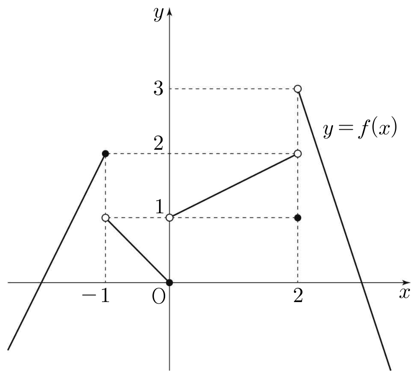
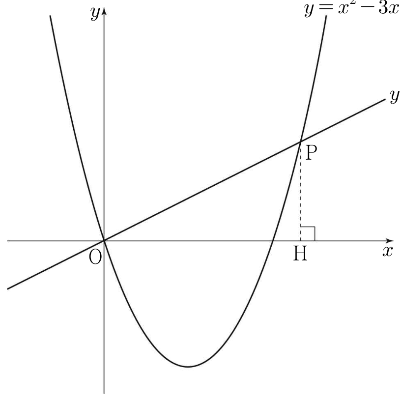
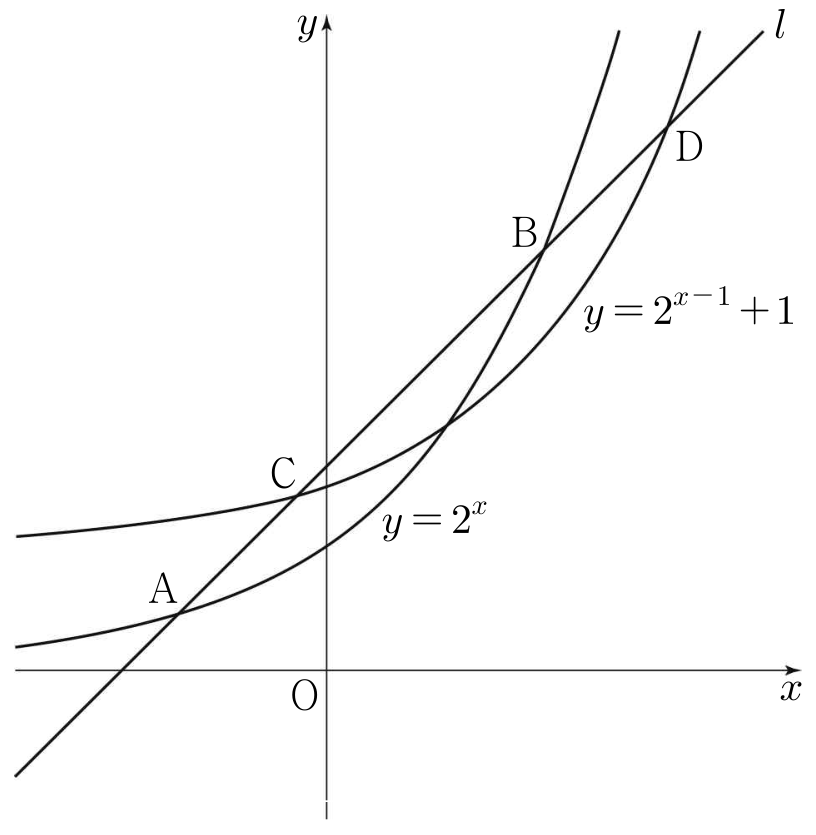

생성기 숫자판 1/5 · G2M9-13#2다항함수 $f\left(x\right)$에 대하여 $\lim_{h\to0}\frac{f\left(2+h\right)-f\left(2\right)}{4h}=6$일 때, $f'\left(2\right)$의 값으로 옳은 것을 고르세요.
생성기 숫자판 2/5 · G2M9-13#2다항함수 $f\left(x\right)$에 대하여 $\lim_{h\to0}\frac{f\left(5+h\right)-f\left(5\right)}{3h}=4$일 때, $f'\left(5\right)$의 값으로 옳은 것을 고르세요.
생성기 숫자판 3/5 · G2M9-13#2다항함수 $f\left(x\right)$에 대하여 $\lim_{h\to0}\frac{f\left(4+h\right)-f\left(4\right)}{4h}=8$일 때, $f'\left(4\right)$의 값으로 옳은 것을 고르세요.
생성기 숫자판 4/5 · G2M9-13#2다항함수 $f\left(x\right)$에 대하여 $\lim_{h\to0}\frac{f\left(2+h\right)-f\left(2\right)}{2h}=9$일 때, $f'\left(2\right)$의 값으로 옳은 것을 고르세요.
생성기 숫자판 5/5 · G2M9-13#2다항함수 $f\left(x\right)$에 대하여 $\lim_{h\to0}\frac{f\left(4+h\right)-f\left(4\right)}{2h}=8$일 때, $f'\left(4\right)$의 값으로 옳은 것을 고르세요.
생성기 숫자판 1/6 · G2M9-13#3세 수 $a$, $47$, $b$가 이 순서대로 등비수열을 이룰 때, $a\times b$의 값으로 옳은 것을 고르세요.
① $47$② $94$③ $2162$④ $2209$⑤ $2256$
정답④ $2209$ 세 수가 등비수열이므로 공비를 $r$라 하면 $a=47/r$, $b=47r$입니다. $a\times b=47^2=2209$
숫자: 원본 4 → 쌍둥이 47
생성기 숫자판 2/6 · G2M9-13#3세 수 $a$, $27$, $b$가 이 순서대로 등비수열을 이룰 때, $a\times b$의 값으로 옳은 것을 고르세요.
① $27$② $54$③ $702$④ $729$⑤ $756$
정답④ $729$ 세 수가 등비수열이므로 공비를 $r$라 하면 $a=27/r$, $b=27r$입니다. $a\times b=27^2=729$
숫자: 원본 4 → 쌍둥이 27
생성기 숫자판 3/6 · G2M9-13#3세 수 $a$, $2$, $b$가 이 순서대로 등비수열을 이룰 때, $a\times b$의 값으로 옳은 것을 고르세요.
① $\frac{1}{2}$② $1$③ $2$④ $4$⑤ $8$
정답④ $4$ 세 수 $a$, $2$, $b$가 이 순서대로 등비수열을 이루므로 $2^{2}=a\times b$ 따라서 $a\times b=4$
숫자: 원본 4 → 쌍둥이 2
생성기 숫자판 4/6 · G2M9-13#3세 수 $a$, $53$, $b$가 이 순서대로 등비수열을 이룰 때, $a\times b$의 값으로 옳은 것을 고르세요.
① $53$② $106$③ $2756$④ $2809$⑤ $2862$
정답④ $2809$ 세 수가 등비수열이므로 공비를 $r$라 하면 $a=53/r$, $b=53r$입니다. $a\times b=53^2=2809$
숫자: 원본 4 → 쌍둥이 53
생성기 숫자판 5/6 · G2M9-13#3세 수 $a$, $45$, $b$가 이 순서대로 등비수열을 이룰 때, $a\times b$의 값으로 옳은 것을 고르세요.
① $45$② $90$③ $1980$④ $2025$⑤ $2070$
정답④ $2025$ 세 수가 등비수열이므로 공비를 $r$라 하면 $a=45/r$, $b=45r$입니다. $a\times b=45^2=2025$
숫자: 원본 4 → 쌍둥이 45
생성기 숫자판 6/6 · G2M9-13#3세 수 $a$, $33$, $b$가 이 순서대로 등비수열을 이룰 때, $a\times b$의 값으로 옳은 것을 고르세요.
① $33$② $66$③ $1056$④ $1089$⑤ $1122$
정답④ $1089$ 세 수가 등비수열이므로 공비를 $r$라 하면 $a=33/r$, $b=33r$입니다. $a\times b=33^2=1089$
숫자: 원본 4 → 쌍둥이 33
4. 2025년 10월 4번 · 3점 · 수학Ⅱ 함수의 극한·연속 · G2f-08#0
원본 (내부용)함수 \(y=f(x)\)의 그래프가 그림과 같다. [그래프 설명: 가로축은 \(x\), 세로축은 \(y\)이며 원점은 \(O\). \(x=-1\)에서 \((-1,2)\)는 채운 점, \((-1,1)\)은 빈 점이다. 빈 점 \((-1,1)\)에서 채운 점 \((0,0)\)까지 선분이 이어진다. 빈 점 \((0,1)\)에서 빈 점 \((2,2)\)까지 선분이 이어진다. \(x=2\)에서 \((2,2)\), \((2,3)\)은 빈 점이고 \((2,1)\)은 채운 점이다. 빈 점 \((2,3)\)에서 오른쪽 아래로 뻗는 직선이 이어진다. 점선으로 \(y=1,2,3\) 및 \(x=-1,2\)의 위치가 표시되어 있다. 그래프에는 \(y=f(x)\)라고 적혀 있다.] \(\displaystyle\lim_{x\to-1^-}f(x)+\lim_{x\to2^+}f(x)\)의 값은? [3점]

① \(1\)② \(2\)③ \(3\)④ \(4\)⑤ \(5\)
그림·참고 $쪽수 표기: 1/12$
원본 정답 ⑤
원본 풀이 (내부용)[출제의도] 함수의 극한 이해하기
\(
\lim_{x\to1^-}f(x)+\lim_{x\to2^+}f(x)=2+3=5
\)
생성기 숫자판 1/6 · G2f-08#0함수 $y=f\left(x\right)$의 그래프가 그림과 같고, 두 경계의 $x$좌표가 $-2$, $1$이며 각 경계의 좌우 극한값이 $(3,2)$, $(3,4)$이고 채워진 두 점의 함수값이 $3$, $2$일 때, $\lim_{x\to -2^{+}}f\left(x\right)-\lim_{x\to 1^{+}}f\left(x\right)$의 값으로 옮은 것을 고르세요.
① $-4$② $-3$③ $-2$④ $-1$⑤ $0$
정답③ $-2$ $x\to -2^{+}$일 때 $f\left(x\right)\to 2$ $x\to 1^{+}$일 때 $f\left(x\right)\to 4$ 따라서 구하는 값은 $2-4=-2$
생성기 숫자판 2/6 · G2f-08#0함수 $y=f\left(x\right)$의 그래프가 그림과 같고, 두 경계의 $x$좌표가 $-1$, $1$이며 각 경계의 좌우 극한값이 $(3,2)$, $(3,4)$이고 채워진 두 점의 함수값이 $3$, $2$일 때, $\lim_{x\to -1^{-}}f\left(x\right)+\lim_{x\to 1^{-}}f\left(x\right)$의 값으로 옮은 것을 고르세요.
① $4$② $5$③ $6$④ $7$⑤ $8$
정답③ $6$ $x\to -1^{-}$일 때 $f\left(x\right)\to 3$ $x\to 1^{-}$일 때 $f\left(x\right)\to 3$ 따라서 구하는 값은 $3+3=6$
생성기 숫자판 3/6 · G2f-08#0함수 $y=f\left(x\right)$의 그래프가 그림과 같고, 두 경계의 $x$좌표가 $-1$, $1$이며 각 경계의 좌우 극한값이 $(3,1)$, $(3,4)$이고 채워진 두 점의 함수값이 $3$, $1$일 때, $\lim_{x\to -1^{-}}f\left(x\right)+\lim_{x\to 1^{-}}f\left(x\right)$의 값으로 옮은 것을 고르세요.
① $4$② $5$③ $6$④ $7$⑤ $8$
정답③ $6$ $x\to -1^{-}$일 때 $f\left(x\right)\to 3$ $x\to 1^{-}$일 때 $f\left(x\right)\to 3$ 따라서 구하는 값은 $3+3=6$
생성기 숫자판 4/6 · G2f-08#0함수 $y=f\left(x\right)$의 그래프가 그림과 같고, 두 경계의 $x$좌표가 $-1$, $2$이며 각 경계의 좌우 극한값이 $(3,2)$, $(3,4)$이고 채워진 두 점의 함수값이 $3$, $2$일 때, $\lim_{x\to -1^{+}}f\left(x\right)-\lim_{x\to 2^{-}}f\left(x\right)$의 값으로 옮은 것을 고르세요.
① $-3$② $-2$③ $-1$④ $0$⑤ $1$
정답③ $-1$ $x\to -1^{+}$일 때 $f\left(x\right)\to 2$ $x\to 2^{-}$일 때 $f\left(x\right)\to 3$ 따라서 구하는 값은 $2-3=-1$
생성기 숫자판 5/6 · G2f-08#0함수 $y=f\left(x\right)$의 그래프가 그림과 같고, 두 경계의 $x$좌표가 $-2$, $1$이며 각 경계의 좌우 극한값이 $(3,1)$, $(3,4)$이고 채워진 두 점의 함수값이 $3$, $1$일 때, $\lim_{x\to -2^{+}}f\left(x\right)-\lim_{x\to 1^{-}}f\left(x\right)$의 값으로 옮은 것을 고르세요.
① $-4$② $-3$③ $-2$④ $-1$⑤ $0$
정답③ $-2$ $x\to -2^{+}$일 때 $f\left(x\right)\to 1$ $x\to 1^{-}$일 때 $f\left(x\right)\to 3$ 따라서 구하는 값은 $1-3=-2$
생성기 숫자판 6/6 · G2f-08#0함수 $y=f\left(x\right)$의 그래프가 그림과 같고, 두 경계의 $x$좌표가 $-2$, $1$이며 각 경계의 좌우 극한값이 $(2,1)$, $(2,4)$이고 채워진 두 점의 함수값이 $2$, $1$일 때, $\lim_{x\to -2^{-}}f\left(x\right)+\lim_{x\to 1^{-}}f\left(x\right)$의 값으로 옮은 것을 고르세요.
① $2$② $3$③ $4$④ $5$⑤ $6$
정답③ $4$ $x\to -2^{-}$일 때 $f\left(x\right)\to 2$ $x\to 1^{-}$일 때 $f\left(x\right)\to 2$ 따라서 구하는 값은 $2+2=4$
원본 (내부용)함수 \( f(x)= \begin{cases} (x-2a)^2 & (x<a)\\ x^2-3x+6 & (x\ge a) \end{cases} \) 가 실수 전체의 집합에서 연속일 때, 상수 \(a\)의 값은? [3점]
① \(1\)② \(2\)③ \(3\)④ \(4\)⑤ \(5\)
원본 정답 ②
원본 풀이 (내부용)[출제의도] 함수의 연속 이해하기
함수 \(f(x)\)는 실수 전체의 집합에서 연속이므로 \(x=a\)에서 연속이다.
\(
f(a)=\lim_{x\to a^+}f(x)
=\lim_{x\to a^+}(x^2-3x+6)=a^2-3a+6
\)
\(
\lim_{x\to a^-}f(x)
=\lim_{x\to a^-}(x-2a)^2=a^2
\)
이므로 \(a^2-3a+6=a^2\)에서 \(a=2\).
생성기 숫자판 1/6 · G2M9-13#5함수 $f\left(x\right)=\begin{cases}\left(x-2a\right)^{2} & \left(x<a\right)\\x^{2}+2x-2 & \left(x\ge a\right)\end{cases}$가 실수 전체의 집합에서 연속일 때, 상수 $a$의 값으로 옳은 것을 고르세요.
① $-3$② $-2$③ $-1$④ $0$⑤ $1$
정답⑤ $1$ 함수 $f\left(x\right)$가 실수 전체의 집합에서 연속이려면 $x=a$에서 연속이어야 하므로 $\lim_{x\to a-}f\left(x\right)=f\left(a\right)$ $\left(a-2a\right)^{2}=a^{2}+2a-2$ $a^{2}=a^{2}+2a-2$에서 $2a-2=0$ 따라서 $a=1$
숫자: 원본 2 3 6 → 쌍둥이 2 2 2 · 같은 수: 2
생성기 숫자판 2/6 · G2M9-13#5함수 $f\left(x\right)=\begin{cases}\left(x-2a\right)^{2} & \left(x<a\right)\\x^{2}-4x+16 & \left(x\ge a\right)\end{cases}$가 실수 전체의 집합에서 연속일 때, 상수 $a$의 값으로 옳은 것을 고르세요.
① $0$② $1$③ $2$④ $3$⑤ $4$
정답⑤ $4$ 함수 $f\left(x\right)$가 실수 전체의 집합에서 연속이려면 $x=a$에서 연속이어야 하므로 $\lim_{x\to a-}f\left(x\right)=f\left(a\right)$ $\left(a-2a\right)^{2}=a^{2}-4a+16$ $a^{2}=a^{2}-4a+16$에서 $-4a+16=0$ 따라서 $a=4$
숫자: 원본 2 3 6 → 쌍둥이 2 4 16 · 같은 수: 2
생성기 숫자판 3/6 · G2M9-13#5함수 $f\left(x\right)=\begin{cases}\left(x-2a\right)^{2} & \left(x<a\right)\\x^{2}+6x+8 & \left(x\ge a\right)\end{cases}$가 실수 전체의 집합에서 연속일 때, 상수 $a$의 값으로 옳은 것을 고르세요.
① $-\frac{4}{3}$② $1$③ $2$④ $3$⑤ $4$
정답① $-\frac{4}{3}$ 연속 조건에서 $a^{2}=a^{2}+6a+8$ $6a+8=0$이므로 $a=-\frac{4}{3}$ 따라서 답은 $-\frac{4}{3}$ 따라서 $a=1$
숫자: 원본 2 3 6 → 쌍둥이 2 6 8 · 같은 수: 2 6
생성기 숫자판 4/6 · G2M9-13#5함수 $f\left(x\right)=\begin{cases}\left(x-2a\right)^{2} & \left(x<a\right)\\x^{2}-5x+6 & \left(x\ge a\right)\end{cases}$가 실수 전체의 집합에서 연속일 때, 상수 $a$의 값으로 옳은 것을 고르세요.
① $1$② $\frac{6}{5}$③ $3$④ $4$⑤ $5$
정답② $\frac{6}{5}$ 연속 조건에서 $a^{2}=a^{2}-5a+6$ $-5a+6=0$이므로 $a=\frac{6}{5}$ 따라서 답은 $\frac{6}{5}$ 따라서 $a=1$
숫자: 원본 2 3 6 → 쌍둥이 2 5 6 · 같은 수: 2 6
생성기 숫자판 5/6 · G2M9-13#5함수 $f\left(x\right)=\begin{cases}\left(x-2a\right)^{2} & \left(x<a\right)\\x^{2}-x+5 & \left(x\ge a\right)\end{cases}$가 실수 전체의 집합에서 연속일 때, 상수 $a$의 값으로 옳은 것을 고르세요.
① $4$② $5$③ $6$④ $7$⑤ $8$
정답② $5$ 함수 $f\left(x\right)$가 실수 전체의 집합에서 연속이려면 $x=a$에서 연속이어야 하므로 $\lim_{x\to a-}f\left(x\right)=f\left(a\right)$ $\left(a-2a\right)^{2}=a^{2}-a+5$ $a^{2}=a^{2}-a+5$에서 $-a+5=0$ 따라서 $a=5$
숫자: 원본 2 3 6 → 쌍둥이 2 5 · 같은 수: 2
생성기 숫자판 6/6 · G2M9-13#5함수 $f\left(x\right)=\begin{cases}\left(x-2a\right)^{2} & \left(x<a\right)\\x^{2}+4x-20 & \left(x\ge a\right)\end{cases}$가 실수 전체의 집합에서 연속일 때, 상수 $a$의 값으로 옳은 것을 고르세요.
① $4$② $5$③ $6$④ $7$⑤ $8$
정답② $5$ 함수 $f\left(x\right)$가 실수 전체의 집합에서 연속이려면 $x=a$에서 연속이어야 하므로 $\lim_{x\to a-}f\left(x\right)=f\left(a\right)$ $\left(a-2a\right)^{2}=a^{2}+4a-20$ $a^{2}=a^{2}+4a-20$에서 $4a-20=0$ 따라서 $a=5$
10. 2025년 10월 10번 · 3점 · 수학Ⅱ 함수의 극한·연속 · G2M9-14#0
원본 (내부용)함수 \(f(x)\)에 대하여 \(\displaystyle\lim_{x\to\infty}(x-1)f(x)=12\)일 때, \( \displaystyle\lim_{x\to\infty}\frac{(x^2-1)f(x)}{3x+1} \) 의 값은? [3점]
① \(1\)② \(2\)③ \(3\)④ \(4\)⑤ \(5\)
그림·참고 $쪽수 표기: 3/12$
원본 정답 ④
원본 풀이 (내부용)[출제의도] 함수의 극한을 활용하여 문제해결하기
\(
\lim_{x\to\infty}\frac{(x^2-1)f(x)}{3x+1}
=\lim_{x\to\infty}\left\{\frac{x+1}{3x+1}\times(x-1)f(x)\right\}
\)
\(
=\lim_{x\to\infty}\left\{\frac{1+\frac1x}{3+\frac1x}\times(x-1)f(x)\right\}
\)
\(
=\frac13\times12=4
\)
생성기 숫자판 1/6 · G2M9-14#0함수 $f\left(x\right)$에 대하여 $\lim_{x\to\infty}\left(x-2\right)f\left(x\right)=8$일 때, $\lim_{x\to\infty}\frac{\left(x^{2}-4\right)f\left(x\right)}{4x-2}$의 값으로 옳은 것을 고르세요.
생성기 숫자판 2/6 · G2M9-14#0함수 $f\left(x\right)$에 대하여 $\lim_{x\to\infty}\left(x-2\right)f\left(x\right)=6$일 때, $\lim_{x\to\infty}\frac{\left(x^{2}-4\right)f\left(x\right)}{3x-1}$의 값으로 옳은 것을 고르세요.
생성기 숫자판 3/6 · G2M9-14#0함수 $f\left(x\right)$에 대하여 $\lim_{x\to\infty}\left(x-2\right)f\left(x\right)=10$일 때, $\lim_{x\to\infty}\frac{\left(x^{2}-4\right)f\left(x\right)}{2x-3}$의 값으로 옳은 것을 고르세요.
생성기 숫자판 4/6 · G2M9-14#0함수 $f\left(x\right)$에 대하여 $\lim_{x\to\infty}\left(x-2\right)f\left(x\right)=4$일 때, $\lim_{x\to\infty}\frac{\left(x^{2}-4\right)f\left(x\right)}{4x+3}$의 값으로 옳은 것을 고르세요.
생성기 숫자판 5/6 · G2M9-14#0함수 $f\left(x\right)$에 대하여 $\lim_{x\to\infty}\left(x-1\right)f\left(x\right)=8$일 때, $\lim_{x\to\infty}\frac{\left(x^{2}-1\right)f\left(x\right)}{2x+2}$의 값으로 옳은 것을 고르세요.
생성기 숫자판 6/6 · G2M9-14#0함수 $f\left(x\right)$에 대하여 $\lim_{x\to\infty}\left(x-3\right)f\left(x\right)=10$일 때, $\lim_{x\to\infty}\frac{\left(x^{2}-9\right)f\left(x\right)}{2x-3}$의 값으로 옳은 것을 고르세요.
원본 (내부용)부등식 \( \log_2(x^2-x)<1-\log_{\frac12}x \) 를 만족시키는 모든 \(x\)의 값의 범위가 \(\alpha<x<\beta\)일 때, \(\alpha+\beta\)의 값은? [3점]
① \(2\)② \(4\)③ \(6\)④ \(8\)⑤ \(10\)
원본 정답 ②
원본 풀이 (내부용)[출제의도] 로그함수의 성질을 활용하여 문제해결하기
\(x^2-x,\ x\)는 로그의 진수이므로
\(
x^2-x>0,\quad x>0\text{에서 }x>1\quad\cdots\text{ ㉠}
\)
부등식
\(
\log_2(x^2-x)<1-\log_{\frac12}x
\)
에서
\(
\log_2(x^2-x)<\log_2 2+\log_2x
\)
\(
\log_2(x^2-x)<\log_2 2x
\)
밑 2가 1보다 크므로
\(
x^2-x<2x,\quad x(x-3)<0
\)
에서 \(0<x<3\quad\cdots\text{ ㉡}\)
㉠, ㉡에 의하여 구하는 모든 \(x\)의 값의 범위는
\(
1<x<3
\)
따라서 \(\alpha+\beta=1+3=4\).
생성기 숫자판 1/6 · G2M9-14#1부등식 $\log_{2}\left(x^{2}-4x\right)<1-\log_{\frac{1}{2}}x$를 만족시키는 모든 $x$의 값의 범위가 $\alpha<x<\beta$일 때, $\alpha+\beta$의 값으로 옳은 것을 고르세요.
생성기 숫자판 2/6 · G2M9-14#1부등식 $\log_{2}\left(x^{2}-3x\right)<1-\log_{\frac{1}{2}}x$를 만족시키는 모든 $x$의 값의 범위가 $\alpha<x<\beta$일 때, $\alpha+\beta$의 값으로 옳은 것을 고르세요.
생성기 숫자판 3/6 · G2M9-14#1부등식 $\log_{2}\left(x^{2}-x\right)<2-\log_{\frac{1}{2}}x$를 만족시키는 모든 $x$의 값의 범위가 $\alpha<x<\beta$일 때, $\alpha+\beta$의 값으로 옳은 것을 고르세요.
생성기 숫자판 4/6 · G2M9-14#1부등식 $\log_{3}\left(x^{2}-x\right)<2-\log_{\frac{1}{3}}x$를 만족시키는 모든 $x$의 값의 범위가 $\alpha<x<\beta$일 때, $\alpha+\beta$의 값으로 옳은 것을 고르세요.
생성기 숫자판 5/6 · G2M9-14#1부등식 $\log_{2}\left(x^{2}-4x\right)<2-\log_{\frac{1}{2}}x$를 만족시키는 모든 $x$의 값의 범위가 $\alpha<x<\beta$일 때, $\alpha+\beta$의 값으로 옳은 것을 고르세요.
생성기 숫자판 6/6 · G2M9-14#1부등식 $\log_{3}\left(x^{2}-4x\right)<1-\log_{\frac{1}{3}}x$를 만족시키는 모든 $x$의 값의 범위가 $\alpha<x<\beta$일 때, $\alpha+\beta$의 값으로 옳은 것을 고르세요.
12. 2025년 10월 12번 · 3점 · 수학Ⅱ 함수의 극한·연속 · G2M9-14#2
원본 (내부용)실수 \(t(t>0)\)에 대하여 곡선 \(y=x^2-3x\)와 직선 \(y=tx\)가 만나는 점 중 원점 \(O\)가 아닌 점을 \(P\)라 하고, 점 \(P\)에서 \(x\)축에 내린 수선의 발을 \(H\)라 하자. \(\displaystyle\lim_{t\to0+}\frac{\overline{OP}-\overline{OH}}{t^2}\)의 값은? [3점]

① \(\dfrac12\)② \(1\)③ \(\dfrac32\)④ \(2\)⑤ \(\dfrac52\)
그림·참고 $쪽수 표기: 4/12$
원본 정답 ③
원본 풀이 (내부용)[출제의도] 함수의 극한을 활용하여 문제해결하기
\(
x^2-3x=tx
\)
에서
\(
x(x-t-3)=0
\)
\(
x=0\quad\text{또는}\quad x=t+3
\)
점 \(P\)는 원점 \(O\)가 아니므로 점 \(P\)의 좌표는
\(
(t+3,\ t^2+3t)
\)
\(
\overline{OP}
=\sqrt{(t+3)^2+t^2(t+3)^2}
=(t+3)\sqrt{t^2+1}
\)
\(
\overline{OH}=t+3
\)
따라서
\(
\lim_{t\to0^+}\frac{\overline{OP}-\overline{OH}}{t^2}
\)
\(
=\lim_{t\to0^+}
\frac{(t+3)\sqrt{t^2+1}-(t+3)}{t^2}
\)
\(
=\lim_{t\to0^+}
\frac{(t+3)\{(t^2+1)-1\}}
{t^2\left(\sqrt{t^2+1}+1\right)}
\)
\(
=\lim_{t\to0^+}\frac{t+3}{\sqrt{t^2+1}+1}
=\frac32
\)
생성기 숫자판 1/6 · G2M9-14#2실수 $t\ \left(t>0\right)$에 대하여 곡선 $y=x^{2}-6x$와 직선 $y=tx$가 만나는 점 중 원점 $\mathrm{O}$가 아닌 점을 $\mathrm{P}$라 하고, 점 $\mathrm{P}$에서 $x$축에 내린 수선의 발을 $\mathrm{H}$라 합시다. $\lim_{t\to 0+}\frac{\overline{\mathrm{OP}}-\overline{\mathrm{OH}}}{t^{2}}$의 값으로 옳은 것을 고르세요.
생성기 숫자판 2/6 · G2M9-14#2실수 $t\ \left(t>0\right)$에 대하여 곡선 $y=x^{2}-20x$와 직선 $y=tx$가 만나는 점 중 원점 $\mathrm{O}$가 아닌 점을 $\mathrm{P}$라 하고, 점 $\mathrm{P}$에서 $x$축에 내린 수선의 발을 $\mathrm{H}$라 합시다. $\lim_{t\to 0+}\frac{\overline{\mathrm{OP}}-\overline{\mathrm{OH}}}{t^{2}}$의 값으로 옳은 것을 고르세요.
생성기 숫자판 3/6 · G2M9-14#2실수 $t\ \left(t>0\right)$에 대하여 곡선 $y=x^{2}-15x$와 직선 $y=tx$가 만나는 점 중 원점 $\mathrm{O}$가 아닌 점을 $\mathrm{P}$라 하고, 점 $\mathrm{P}$에서 $x$축에 내린 수선의 발을 $\mathrm{H}$라 합시다. $\lim_{t\to 0+}\frac{\overline{\mathrm{OP}}-\overline{\mathrm{OH}}}{t^{2}}$의 값으로 옳은 것을 고르세요.
① $\frac{13}{2}$② $\frac{15}{2}$③ $8$④ $\frac{17}{2}$⑤ $\frac{19}{2}$
생성기 숫자판 4/6 · G2M9-14#2실수 $t\ \left(t>0\right)$에 대하여 곡선 $y=x^{2}-9x$와 직선 $y=tx$가 만나는 점 중 원점 $\mathrm{O}$가 아닌 점을 $\mathrm{P}$라 하고, 점 $\mathrm{P}$에서 $x$축에 내린 수선의 발을 $\mathrm{H}$라 합시다. $\lim_{t\to 0+}\frac{\overline{\mathrm{OP}}-\overline{\mathrm{OH}}}{t^{2}}$의 값으로 옳은 것을 고르세요.
① $\frac{7}{2}$② $\frac{9}{2}$③ $5$④ $\frac{11}{2}$⑤ $\frac{13}{2}$
생성기 숫자판 5/6 · G2M9-14#2실수 $t\ \left(t>0\right)$에 대하여 곡선 $y=x^{2}-12x$와 직선 $y=tx$가 만나는 점 중 원점 $\mathrm{O}$가 아닌 점을 $\mathrm{P}$라 하고, 점 $\mathrm{P}$에서 $x$축에 내린 수선의 발을 $\mathrm{H}$라 합시다. $\lim_{t\to 0+}\frac{\overline{\mathrm{OP}}-\overline{\mathrm{OH}}}{t^{2}}$의 값으로 옳은 것을 고르세요.
생성기 숫자판 6/6 · G2M9-14#2실수 $t\ \left(t>0\right)$에 대하여 곡선 $y=x^{2}-5x$와 직선 $y=tx$가 만나는 점 중 원점 $\mathrm{O}$가 아닌 점을 $\mathrm{P}$라 하고, 점 $\mathrm{P}$에서 $x$축에 내린 수선의 발을 $\mathrm{H}$라 합시다. $\lim_{t\to 0+}\frac{\overline{\mathrm{OP}}-\overline{\mathrm{OH}}}{t^{2}}$의 값으로 옳은 것을 고르세요.
① $\frac{3}{2}$② $\frac{5}{2}$③ $3$④ $\frac{7}{2}$⑤ $\frac{9}{2}$
원본 (내부용)두 양수 \(a,\ b\)에 대하여 함수 \(y=\tan ax\)의 그래프와 직선 \(y=b\)가 제1사분면에서 만나는 모든 점의 \(x\)좌표를 작은 수부터 크기순으로 나열할 때, \(n\)번째 수를 \(x_n\)이라 하자. \(x_4-x_2=6\pi\)이고 \(x_1=\pi\)일 때, \(a\times b\)의 값은? [3점]
① \(\dfrac{\sqrt{3}}{9}\)② \(\dfrac{\sqrt{3}}{3}\)③ \(\sqrt{3}\)④ \(3\sqrt{3}\)⑤ \(9\sqrt{3}\)
원본 정답 ②
원본 풀이 (내부용)[출제의도] 삼각함수의 뜻과 그래프 이해하기
함수 \(y=\tan ax\)의 주기는 \(\dfrac{\pi}{|a|}\)이고, 풀이가 다음 페이지에서 이어진다.
생성기 숫자판 1/6 · G2M9-14#3두 양수 $a$, $b$에 대하여 함수 $y=\tan ax$의 그래프와 직선 $y=b$가 제$1$사분면에서 만나는 모든 점의 $x$좌표를 작은 수부터 크기순으로 나열할 때, $n$번째 수를 $x_{n}$이라 합시다. $x_{4}-x_{3}=3\pi$이고 $x_{1}=\frac{\pi}{2}$일 때, $a\times b$의 값으로 옳은 것을 고르세요.
① $\frac{\sqrt{3}}{243}$② $\frac{\sqrt{3}}{81}$③ $\frac{\sqrt{3}}{27}$④ $\frac{\sqrt{3}}{9}$⑤ $\frac{\sqrt{3}}{3}$
정답④ $\frac{\sqrt{3}}{9}$ 함수 $y=\tan ax$의 주기는 $\frac{\pi}{a}$이므로 $x_{4}-x_{3}=\frac{\pi}{a}=3\pi$, $a=\frac{1}{3}$ $x_{1}=\frac{\pi}{2}$이므로 $b=\tan\left(\frac{1}{3}\times \frac{\pi}{2}\right)=\tan\frac{\pi}{6}=\frac{\sqrt{3}}{3}$ 따라서 $a\times b=\frac{\sqrt{3}}{9}$
숫자: 원본 1 4 2 6 1 → 쌍둥이 1 4 3 3 1 2 · 같은 수: 1 2 4
생성기 숫자판 2/6 · G2M9-14#3두 양수 $a$, $b$에 대하여 함수 $y=\tan ax$의 그래프와 직선 $y=b$가 제$1$사분면에서 만나는 모든 점의 $x$좌표를 작은 수부터 크기순으로 나열할 때, $n$번째 수를 $x_{n}$이라 합시다. $x_{3}-x_{1}=8\pi$이고 $x_{1}=\pi$일 때, $a\times b$의 값으로 옳은 것을 고르세요.
① $\frac{1}{108}$② $\frac{1}{36}$③ $\frac{1}{12}$④ $\frac{1}{4}$⑤ $\frac{3}{4}$
정답④ $\frac{1}{4}$ 함수 $y=\tan ax$의 주기는 $\frac{\pi}{a}$이므로 $x_{3}-x_{1}=\frac{2\pi}{a}=8\pi$, $a=\frac{1}{4}$ $x_{1}=\pi$이므로 $b=\tan\left(\frac{1}{4}\times \pi\right)=\tan\frac{\pi}{4}=1$ 따라서 $a\times b=\frac{1}{4}$
숫자: 원본 1 4 2 6 1 → 쌍둥이 1 3 1 8 1 · 같은 수: 1
생성기 숫자판 3/6 · G2M9-14#3두 양수 $a$, $b$에 대하여 함수 $y=\tan ax$의 그래프와 직선 $y=b$가 제$1$사분면에서 만나는 모든 점의 $x$좌표를 작은 수부터 크기순으로 나열할 때, $n$번째 수를 $x_{n}$이라 합시다. $x_{5}-x_{4}=2\pi$이고 $x_{1}=\frac{2}{3}\pi$일 때, $a\times b$의 값으로 옳은 것을 고르세요.
① $\frac{\sqrt{3}}{54}$② $\frac{\sqrt{3}}{18}$③ $\frac{\sqrt{3}}{6}$④ $\frac{\sqrt{3}}{2}$⑤ $\frac{3\sqrt{3}}{2}$
정답④ $\frac{\sqrt{3}}{2}$ 함수 $y=\tan ax$의 주기는 $\frac{\pi}{a}$이므로 $x_{5}-x_{4}=\frac{\pi}{a}=2\pi$, $a=\frac{1}{2}$ $x_{1}=\frac{2}{3}\pi$이므로 $b=\tan\left(\frac{1}{2}\times \frac{2}{3}\pi\right)=\tan\frac{\pi}{3}=\sqrt{3}$ 따라서 $a\times b=\frac{\sqrt{3}}{2}$
생성기 숫자판 4/6 · G2M9-14#3두 양수 $a$, $b$에 대하여 함수 $y=\tan ax$의 그래프와 직선 $y=b$가 제$1$사분면에서 만나는 모든 점의 $x$좌표를 작은 수부터 크기순으로 나열할 때, $n$번째 수를 $x_{n}$이라 합시다. $x_{4}-x_{3}=2\pi$이고 $x_{1}=\frac{2}{3}\pi$일 때, $a\times b$의 값으로 옳은 것을 고르세요.
① $\frac{\sqrt{3}}{18}$② $\frac{\sqrt{3}}{6}$③ $\frac{\sqrt{3}}{2}$④ $\frac{3\sqrt{3}}{2}$⑤ $\frac{9\sqrt{3}}{2}$
정답③ $\frac{\sqrt{3}}{2}$ 함수 $y=\tan ax$의 주기는 $\frac{\pi}{a}$이므로 $x_{4}-x_{3}=\frac{\pi}{a}=2\pi$, $a=\frac{1}{2}$ $x_{1}=\frac{2}{3}\pi$이므로 $b=\tan\left(\frac{1}{2}\times \frac{2}{3}\pi\right)=\tan\frac{\pi}{3}=\sqrt{3}$ 따라서 $a\times b=\frac{\sqrt{3}}{2}$
생성기 숫자판 5/6 · G2M9-14#3두 양수 $a$, $b$에 대하여 함수 $y=\tan ax$의 그래프와 직선 $y=b$가 제$1$사분면에서 만나는 모든 점의 $x$좌표를 작은 수부터 크기순으로 나열할 때, $n$번째 수를 $x_{n}$이라 합시다. $x_{3}-x_{2}=2\pi$이고 $x_{1}=\frac{2}{3}\pi$일 때, $a\times b$의 값으로 옳은 것을 고르세요.
① $\frac{\sqrt{3}}{54}$② $\frac{\sqrt{3}}{18}$③ $\frac{\sqrt{3}}{6}$④ $\frac{\sqrt{3}}{2}$⑤ $\frac{3\sqrt{3}}{2}$
정답④ $\frac{\sqrt{3}}{2}$ 함수 $y=\tan ax$의 주기는 $\frac{\pi}{a}$이므로 $x_{3}-x_{2}=\frac{\pi}{a}=2\pi$, $a=\frac{1}{2}$ $x_{1}=\frac{2}{3}\pi$이므로 $b=\tan\left(\frac{1}{2}\times \frac{2}{3}\pi\right)=\tan\frac{\pi}{3}=\sqrt{3}$ 따라서 $a\times b=\frac{\sqrt{3}}{2}$
숫자: 원본 1 4 2 6 1 → 쌍둥이 1 3 2 2 1 2 3 · 같은 수: 1 2
생성기 숫자판 6/6 · G2M9-14#3두 양수 $a$, $b$에 대하여 함수 $y=\tan ax$의 그래프와 직선 $y=b$가 제$1$사분면에서 만나는 모든 점의 $x$좌표를 작은 수부터 크기순으로 나열할 때, $n$번째 수를 $x_{n}$이라 합시다. $x_{5}-x_{1}=12\pi$이고 $x_{1}=\frac{3}{4}\pi$일 때, $a\times b$의 값으로 옳은 것을 고르세요.
① $\frac{1}{81}$② $\frac{1}{27}$③ $\frac{1}{9}$④ $\frac{1}{3}$⑤ $1$
정답④ $\frac{1}{3}$ 함수 $y=\tan ax$의 주기는 $\frac{\pi}{a}$이므로 $x_{5}-x_{1}=\frac{4\pi}{a}=12\pi$, $a=\frac{1}{3}$ $x_{1}=\frac{3}{4}\pi$이므로 $b=\tan\left(\frac{1}{3}\times \frac{3}{4}\pi\right)=\tan\frac{\pi}{4}=1$ 따라서 $a\times b=\frac{1}{3}$
숫자: 원본 1 4 2 6 1 → 쌍둥이 1 5 1 12 1 3 4 · 같은 수: 1 4
14. 2025년 10월 14번 · 4점 · 수학Ⅰ 수열 · 4점 쌍둥이
원본 (내부용)수열 \(\{a_n\}\)의 첫째항부터 제 \(n\)항까지의 합을 \(S_n\)이라 하자. \(S_n=\dfrac{1}{n}\)일 때, \(\displaystyle a_1+\sum_{k=2}^{7}\frac{1}{(k-1)\times a_k}\)의 값은? [4점]
① \(-34\)② \(-32\)③ \(-30\)④ \(-28\)⑤ \(-26\)
그림·참고 $쪽수 표기: 5/12$
원본 정답 ⑤
원본 풀이 (내부용)[출제의도] 수열의 합과 일반항 사이의 관계를 활용하여 문제해결하기
\(
a_1=S_1=1
\)
\(n\ge2\)일 때
\(
a_n=S_n-S_{n-1}
=\frac1n-\frac1{n-1}
=-\frac1{n(n-1)}
\)
따라서
\(
a_1+\sum_{k=2}^{7}\frac{1}{(k-1)\times a_k}
=1+\sum_{k=2}^{7}\frac{-k(k-1)}{k-1}
\)
\(
=1-\sum_{k=2}^{7}k
\)
\(
=1-\left(\sum_{k=1}^{7}k-1\right)
\)
\(
=2-\frac{7\times8}{2}=-26
\)
쌍둥이 1/5 · 4점 쌍둥이수열의 부분합이 $S_n=4/n$입니다. $a_1+\sum_{k=2}^{7}\frac{4}{(k-1)a_k}$의 값을 구하세요.
① $-25$② $-24$③ $-23$④ $-22$⑤ $-21$
정답③ $-23$ $a_1=4$이고 $a_k=S_k-S_{k-1}=-4/[k(k-1)]$입니다. 따라서 각 합항은 $-k$입니다. $4-\sum_{k=2}^7 k=4-27=-23$입니다.
숫자: 원본 1 1 2 1 1 → 쌍둥이 4 1 2 4 1 · 같은 수: 1 2
쌍둥이 2/5 · 4점 쌍둥이수열 $\{a_{n}\}$의 첫째항부터 제$n$항까지의 합을 $S_{n}$이라 합니다. $S_{n}=\frac{2}{n}$일 때, $a_{1}+\sum_{k=2}^{8}\frac{2}{(k-1)\times a_{k}}$의 값으로 옳은 것을 고르세요.
① $-33$② $-31$③ $-29$④ $-27$⑤ $-25$
정답① $-33$ $a_{1}=S_{1}=2$ $k\ge2$일 때 $a_{k}=S_{k}-S_{k-1}=\frac{2}{k}-\frac{2}{k-1}=-\frac{2}{k(k-1)}$ $\frac{2}{(k-1)a_{k}}=-k$이므로 $\sum_{k=2}^{8}(-k)=-35$ 구하는 값은 $2-35=-33$
숫자: 원본 1 1 2 1 1 → 쌍둥이 2 1 2 2 1 · 같은 수: 1 2
쌍둥이 3/5 · 4점 쌍둥이수열 $\{a_{n}\}$의 첫째항부터 제$n$항까지의 합을 $S_{n}$이라 합니다. $S_{n}=\frac{3}{n}$일 때, $a_{1}+\sum_{k=2}^{6}\frac{3}{(k-1)\times a_{k}}$의 값으로 옳은 것을 고르세요.
① $-19$② $-17$③ $-15$④ $-13$⑤ $-11$
정답② $-17$ $a_{1}=S_{1}=3$ $k\ge2$일 때 $a_{k}=S_{k}-S_{k-1}=\frac{3}{k}-\frac{3}{k-1}=-\frac{3}{k(k-1)}$ $\frac{3}{(k-1)a_{k}}=-k$이므로 $\sum_{k=2}^{6}(-k)=-20$ 구하는 값은 $3-20=-17$
숫자: 원본 1 1 2 1 1 → 쌍둥이 3 1 2 3 1 · 같은 수: 1 2
쌍둥이 4/5 · 4점 쌍둥이수열 $\{a_{n}\}$의 첫째항부터 제$n$항까지의 합을 $S_{n}$이라 합니다. $S_{n}=\frac{1}{n}$일 때, $a_{1}+\sum_{k=2}^{9}\frac{1}{(k-1)\times a_{k}}$의 값으로 옳은 것을 고르세요.
① $-47$② $-45$③ $-43$④ $-41$⑤ $-39$
정답③ $-43$ $a_{1}=S_{1}=1$ $k\ge2$일 때 $a_{k}=S_{k}-S_{k-1}=\frac{1}{k}-\frac{1}{k-1}=-\frac{1}{k(k-1)}$ $\frac{1}{(k-1)a_{k}}=-k$이므로 $\sum_{k=2}^{9}(-k)=-44$ 구하는 값은 $1-44=-43$
숫자: 원본 1 1 2 1 1 → 쌍둥이 1 1 2 1 1 · 같은 수: 1 2
쌍둥이 5/5 · 4점 쌍둥이수열의 부분합이 $S_n=5/n$입니다. $a_1+\sum_{k=2}^{8}\frac{5}{(k-1)a_k}$의 값을 구하세요.
① $-32$② $-31$③ $-30$④ $-29$⑤ $-28$
정답③ $-30$ $a_1=5$이고 $a_k=-5/[k(k-1)]$입니다. 그러므로 합의 각 항은 $-k$입니다. $5-\sum_{k=2}^{8}k=5-35=-30$입니다.
숫자: 원본 1 1 2 1 1 → 쌍둥이 5 1 2 5 1 · 같은 수: 1 2
15. 2025년 10월 15번 · 4점 · 수학Ⅰ 지수·로그 · 4점 쌍둥이
원본 (내부용)2 이상의 자연수 \(n\)에 대하여 \(n-12\)의 \(n\)제곱근 중 실수인 것의 개수를 \(f(n)\)이라 하자. \(f(n)+f(2n)=1\)을 만족시키는 모든 \(n\)의 값의 합은? [4점]
① 10② 12③ 14④ 16⑤ 18
원본 정답 ③
원본 풀이 (내부용)[출제의도] 거듭제곱근의 정의 이해하기
**(i) \(1<n<6\)일 때**
\(n-12<0\)이므로 \(n\)이 짝수이면 \(f(n)=0\), \(n\)이 홀수이면 \(f(n)=1\).
또한 \(2n-12<0\)이고 \(2n\)은 짝수이므로 \(f(2n)=0\).
그러므로 \(f(n)+f(2n)=1\)을 만족시키는 자연수 \(n\)의 값은 \(3,\ 5\).
**(ii) \(n=6\)일 때**
\(n-12<0\)이고 6은 짝수이므로 \(f(n)=0\).
또한 \(2n-12=0\)이므로 \(f(2n)=1\).
그러므로 \(f(n)+f(2n)=1\)을 만족시킨다.
**(iii) \(n>6\)일 때**
\(2n-12>0\)이고 \(2n\)은 짝수이므로 \(f(2n)=2\).
\(f(n)\ge0\)이므로 \(f(n)+f(2n)=1\)을 만족시키지 않는다.
(i), (ii), (iii)에 의하여 구하는 모든 \(n\)의 값의 합은
\(
3+5+6=14
\)
원 PDF 페이지 번호: 2
쌍둥이 1/5 · 4점 쌍둥이$3$ 이상의 자연수 $n$에 대하여 $n-48$의 $n$제곱근 중 실수인 것의 개수를 $f(n)$이라 합니다. $f(n)+f(3n)=3$을 만족시키는 모든 $n$의 값의 합의 값으로 옳은 것을 고르세요.
① $44$② $46$③ $48$④ $50$⑤ $52$
정답③ $48$ $n$이 홀수이면 $n$과 $3n$도 홀수이므로 $f(n)=f(3n)=1$이고 합은 $2$이다. $n$이 짝수이면 $f(n)$은 $n<48$에서 $0$, $n=48$에서 $1$, $n>48$에서 $2$이다. $3n$에 대해서도 같은 분류를 적용하면 합이 $3$이 되는 경우는 $n=48$뿐이다. 따라서 모든 해의 합은 $48$이다.
숫자: 원본 2 12 2 1 → 쌍둥이 3 48 3 3
쌍둥이 2/5 · 4점 쌍둥이$3$ 이상의 자연수 $n$에 대하여 $n-30$의 $n$제곱근 중 실수인 것의 개수를 $f(n)$이라 합니다. $f(n)+f(3n)=3$을 만족시키는 모든 $n$의 값의 합의 값으로 옳은 것을 고르세요.
① $26$② $28$③ $30$④ $32$⑤ $34$
정답③ $30$ $n$이 홀수이면 $n$과 $3n$도 홀수이므로 $f(n)=f(3n)=1$이고 합은 $2$이다. $n$이 짝수이면 $f(n)$은 $n<30$에서 $0$, $n=30$에서 $1$, $n>30$에서 $2$이다. $3n$에 대해서도 같은 분류를 적용하면 합이 $3$이 되는 경우는 $n=30$뿐이다. 따라서 모든 해의 합은 $30$이다.
숫자: 원본 2 12 2 1 → 쌍둥이 3 30 3 3
쌍둥이 3/5 · 4점 쌍둥이$3$ 이상의 자연수 $n$에 대하여 $n-36$의 $n$제곱근 중 실수인 것의 개수를 $f(n)$이라 합니다. $f(n)+f(3n)=3$을 만족시키는 모든 $n$의 값의 합의 값으로 옳은 것을 고르세요.
① $32$② $34$③ $36$④ $38$⑤ $40$
정답③ $36$ $n$이 홀수이면 $n$과 $3n$도 홀수이므로 $f(n)=f(3n)=1$이고 합은 $2$이다. $n$이 짝수이면 $f(n)$은 $n<36$에서 $0$, $n=36$에서 $1$, $n>36$에서 $2$이다. $3n$에 대해서도 같은 분류를 적용하면 합이 $3$이 되는 경우는 $n=36$뿐이다. 따라서 모든 해의 합은 $36$이다.
숫자: 원본 2 12 2 1 → 쌍둥이 3 36 3 3
쌍둥이 4/5 · 4점 쌍둥이$3$ 이상의 자연수 $n$에 대하여 $n-42$의 $n$제곱근 중 실수인 것의 개수를 $f(n)$이라 합니다. $f(n)+f(3n)=3$을 만족시키는 모든 $n$의 값의 합의 값으로 옳은 것을 고르세요.
① $38$② $40$③ $42$④ $44$⑤ $46$
정답③ $42$ $n$이 홀수이면 $n$과 $3n$도 홀수이므로 $f(n)=f(3n)=1$이고 합은 $2$이다. $n$이 짝수이면 $f(n)$은 $n<42$에서 $0$, $n=42$에서 $1$, $n>42$에서 $2$이다. $3n$에 대해서도 같은 분류를 적용하면 합이 $3$이 되는 경우는 $n=42$뿐이다. 따라서 모든 해의 합은 $42$이다.
숫자: 원본 2 12 2 1 → 쌍둥이 3 42 3 3
쌍둥이 5/5 · 4점 쌍둥이$3$ 이상의 자연수 $n$에 대하여 $n-54$의 $n$제곱근 중 실수인 것의 개수를 $f(n)$이라 합니다. $f(n)+f(3n)=3$을 만족시키는 모든 $n$의 값의 합의 값으로 옳은 것을 고르세요.
① $50$② $52$③ $54$④ $56$⑤ $58$
정답③ $54$ $n$이 홀수이면 $n$과 $3n$도 홀수이므로 $f(n)=f(3n)=1$이고 합은 $2$이다. $n$이 짝수이면 $f(n)$은 $n<54$에서 $0$, $n=54$에서 $1$, $n>54$에서 $2$이다. $3n$에 대해서도 같은 분류를 적용하면 합이 $3$이 되는 경우는 $n=54$뿐이다. 따라서 모든 해의 합은 $54$이다.
숫자: 원본 2 12 2 1 → 쌍둥이 3 54 3 3
16. 2025년 10월 16번 · 4점 · 수학Ⅱ 함수의 극한·연속 · 4점 쌍둥이
원본 (내부용)최고차항의 계수가 1인 두 이차함수 \(f(x), g(x)\)가 \( f(1)=0,\qquad \lim_{x\to 1}\frac{f(x+3)\times g(x)}{\{f(x)\}^2}=0 \) 을 만족시킬 때, \(f(5)+g(5)\)의 값은? [4점]
① 14② 16③ 18④ 20⑤ 22
그림·참고 ---
원본 정답 ④
원본 풀이 (내부용)[출제의도] 함수의 극한을 이용하여 추론하기 — 풀이 계속
**(i) \(a=1\)일 때**
\(
\lim_{x\to1}
\frac{f(x+3)\times g(x)}{\{f(x)\}^2}
=
\lim_{x\to1}
\frac{(x+2)^2g(x)}{(x-1)^4}
\)
사차다항식 \((x+2)^2g(x)\)는 \((x-1)^5\)을 인수로 가질 수 없으므로
\(
\lim_{x\to1}
\frac{f(x+3)\times g(x)}{\{f(x)\}^2}=0
\)
을 만족시키지 않는다.
**(ii) \(a\ne1\)일 때**
\(
\lim_{x\to1}
\frac{f(x+3)\times g(x)}{\{f(x)\}^2}
\)
\(
=\lim_{x\to1}
\frac{(x+2)(x+3-a)g(x)}
{(x-1)^2(x-a)^2}=0
\)
이므로 사차다항식 \((x+2)(x+3-a)g(x)\)는 \((x-1)^3\)을 인수로 갖는다.
그러므로
\(
(x+3-a)g(x)=(x-1)^3
\)
이고, \(a=4,\ g(x)=(x-1)^2\).
(i), (ii)에 의하여
\(
f(x)=(x-1)(x-4),\quad g(x)=(x-1)^2
\)
따라서
\(
f(5)+g(5)=4+16=20
\)
쌍둥이 1/5 · 4점 쌍둥이최고차항의 계수가 $1$인 두 이차함수 $f(x)$, $g(x)$가 $f(2)=0$, $\lim_{x\to2}\frac{f(x+1)\times g(x)}{\{f(x)\}^{2}}=0$을 만족시킬 때, $f(4)+g(4)$의 값으로 옳은 것을 고르세요.
① $6$② $8$③ $10$④ $12$⑤ $14$
정답① $6$ $f(x)=(x-2)(x-p)$라 하면 $\{f(x)\}^{2}$은 $x=2$에서 $(x-2)^{2}$ 이상의 인수를 가지므로, 극한이 $0$이려면 분자가 $(x-2)^{3}$을 인수로 가져야 합니다. $f(x+1)$이 $x=2$에서 $0$이 아니면 $g(x)$가 $(x-2)^{3}$을 인수로 가져야 하므로 불가능합니다. 따라서 $f(3)=0$, $p=3$ $f(x+1)$은 $(x-2)$를 한 번만 가지므로 $g(x)=(x-2)^{2}$ $f(4)+g(4)=2+4=6$
정답③ $22$ 첫 조건에서 $12\le a_1\le16$입니다. $m=k-1$이면 $a_k=a_1-4m$이고 $4m=5|a_1-4m|$입니다. $a_1=12,\ldots,16$을 대입한 두 부호 경우에서 유일한 정수해는 $(a_1,m)=(16,5)$입니다. 따라서 $a_1+k=16+6=22$입니다.
쌍둥이 2/5 · 4점 쌍둥이첫째항이 자연수이고 공차가 $-3$인 등차수열 $\{a_{n}\}$과 자연수 $k$가 $a_{4}\times a_{5}\le0$, $|a_{1}-a_{k}|=4|a_{k}|$를 만족시킬 때, $a_{1}+k$의 값으로 옳은 것을 고르세요.
① $11$② $12$③ $13$④ $14$⑤ $15$
정답④ $14$ 공차가 음수이므로 $a_{4}\ge0\ge a_{5}$, 즉 $a_{1}-9\ge0$, $a_{1}-12\le0$에서 $a_{1}=9, 10, 11, 12$ $k-1=m$이라 하면 $a_{1}-a_{k}=3m$이고 $3m=4|a_{1}-3m|$ $a_{1}-3m=\pm\frac{3m}{4}$에서 $a_{1}=\frac{15}{4}m$ 또는 $a_{1}=\frac{9}{4}m$ $a_{1}$의 후보 중 $m$이 자연수가 되는 것은 $a_{1}=9$, $m=4$뿐이므로 $k=5$ $a_{1}+k=14$
쌍둥이 3/5 · 4점 쌍둥이첫째항이 자연수이고 공차가 $-2$인 등차수열 $\{a_{n}\}$과 자연수 $k$가 $a_{6}\times a_{7}\le0$, $|a_{1}-a_{k}|=5|a_{k}|$를 만족시킬 때, $a_{1}+k$의 값으로 옳은 것을 고르세요.
① $14$② $15$③ $16$④ $17$⑤ $18$
정답⑤ $18$ 공차가 음수이므로 $a_{6}\ge0\ge a_{7}$, 즉 $a_{1}-10\ge0$, $a_{1}-12\le0$에서 $a_{1}=10, 11, 12$ $k-1=m$이라 하면 $a_{1}-a_{k}=2m$이고 $2m=5|a_{1}-2m|$ $a_{1}-2m=\pm\frac{2m}{5}$에서 $a_{1}=\frac{12}{5}m$ 또는 $a_{1}=\frac{8}{5}m$ $a_{1}$의 후보 중 $m$이 자연수가 되는 것은 $a_{1}=12$, $m=5$뿐이므로 $k=6$ $a_{1}+k=18$
쌍둥이 4/5 · 4점 쌍둥이첫째항이 자연수이고 공차가 $-4$인 등차수열 $\{a_{n}\}$과 자연수 $k$가 $a_{3}\times a_{4}\le0$, $|a_{1}-a_{k}|=3|a_{k}|$를 만족시킬 때, $a_{1}+k$의 값으로 옳은 것을 고르세요.
① $12$② $13$③ $14$④ $15$⑤ $16$
정답① $12$ 공차가 음수이므로 $a_{3}\ge0\ge a_{4}$, 즉 $a_{1}-8\ge0$, $a_{1}-12\le0$에서 $a_{1}=8, 9, 10, 11, 12$ $k-1=m$이라 하면 $a_{1}-a_{k}=4m$이고 $4m=3|a_{1}-4m|$ $a_{1}-4m=\pm\frac{4m}{3}$에서 $a_{1}=\frac{16}{3}m$ 또는 $a_{1}=\frac{8}{3}m$ $a_{1}$의 후보 중 $m$이 자연수가 되는 것은 $a_{1}=8$, $m=3$뿐이므로 $k=4$ $a_{1}+k=12$
정답③ $11$ 첫 조건은 $6\le a_1\le8$을 줍니다. $m=k-1$이라 하면 $a_k=a_1-2m$이고 둘째 조건은 $2m=4|a_1-2m|$입니다. $a_1=6,7,8$을 대입하면 가능한 정수 $m$은 $a_1=6$일 때만 $m=4$입니다. 따라서 $a_1+k=6+5=11$입니다.
원본 (내부용)함수 \(f(x)=\sin(x+a)\)가 다음 조건을 만족시키도록 하는 \(3\pi\)보다 작은 모든 양수 \(a\)의 값의 합은? [4점] 단힌구간 \([0,\pi]\)에서 함수 \(f(x)\)의 최댓값과 최솟값을 각각 \(M,m\)이라 할 때, \( 2|M|=|m| \) 이다.
① \(\dfrac{25}{6}\pi\)② \(\dfrac{13}{3}\pi\)③ \(\dfrac{9}{2}\pi\)④ \(\dfrac{14}{3}\pi\)⑤ \(\dfrac{29}{6}\pi\)
그림·참고 ---
원본 정답 ⑤
원본 풀이 (내부용)[출제의도] 삼각함수의 그래프를 활용하여 문제해결하기
닫힌구간 \([0,\pi]\)에서 함수 \(f(x)=\sin(x+a)\)의 최댓값, 최솟값은 각각 닫힌구간 \([a,a+\pi]\)에서 함수 \(y=\sin x\)의 최댓값, 최솟값과 같다.
함수 \(y=\sin x\)의 그래프에는 \(x\)축에 \(0,\pi,2\pi,3\pi,4\pi\), \(y\)축 방향에 \(1,-1\)이 표시되어 있다. 최댓값선은 \(y=1\), 최솟값선은 \(y=-1\)이다.
**(i) \(0<a\le\frac{\pi}{2}\)일 때**
\(
M=1
\)
에서 \(2|M|=2\)이고
\(
m=\sin(a+\pi)=-\sin a
\)
에서 \(|m|\le1\)이므로 \(2|M|=|m|\)를 만족시키지 않는다.
**(ii) \(\frac{\pi}{2}<a\le\pi\)일 때**
\(
M=\sin a,\quad m=-1
\)
이고 \(2|M|=|m|\)이므로
\(
\sin a=\frac12,\quad a=\frac56\pi
\)
그림에는 \(y=\frac12\) 수평선과 \(x=\frac56\pi,\ \frac{11}{6}\pi\) 위치가 표시되어 있다.
**(iii) \(\pi<a\le\frac32\pi\)일 때**
\(
M=\sin(a+\pi)=-\sin a,\quad m=-1
\)
이고 \(2|M|=|m|\)이므로
\(
\sin a=-\frac12,\quad a=\frac76\pi
\)
**(iv) \(\frac32\pi<a\le2\pi\)일 때**
\(
M=1
\)
에서 \(2|M|=2\)이고 \(m=\sin a\)에서 \(|m|\le1\)이므로 \(2|M|=|m|\)를 만족시키지 않는다.
**(v) \(2\pi<a\le\frac52\pi\)일 때**
\(
M=1
\)
에서 \(2|M|=2\)이고
\(
m=\sin(a+\pi)=-\sin a
\)
에서 \(|m|\le1\)이므로 \(2|M|=|m|\)를 만족시키지 않는다.
**(vi) \(\frac52\pi<a\le3\pi\)일 때**
\(
M=\sin a,\quad m=-1
\)
이고 \(2|M|=|m|\)이므로
\(
\sin a=\frac12,\quad a=\frac{17}{6}\pi
\)
(i)∼(vi)에 의하여 구하는 모든 양수 \(a\)의 값의 합은
\(
\frac56\pi+\frac76\pi+\frac{17}{6}\pi
=\frac{29}{6}\pi
\)
쌍둥이 1/5 · 4점 쌍둥이함수 $f(x)=\sin(x+a)$가 다음 조건을 만족시키도록 하는 $3\pi$보다 작은 모든 양수 $a$의 값의 합으로 옳은 것을 고르세요. 닫힌구간 $[0,\ \pi]$에서 함수 $f(x)$의 최댓값과 최솟값을 각각 $M$, $m$이라 할 때, $\sqrt{2}|M|=|m|$입니다.
정답$\frac{19\pi}{4}$ $x+a$는 $a$부터 $a+\pi$까지 변하고, 양 끝의 함숫값은 $\sin a$와 $-\sin a$입니다. 구간에 봉우리($1$)가 있으면 $|M|=1$이고 $|m|\le1$이라 식이 성립하지 않으므로, 골짜기($-1$)가 있고 봉우리는 없어야 하며 $|M|=|\sin a|$, $|m|=1$ $\sqrt{2}|\sin a|=1$에서 $|\sin a|=\frac{\sqrt{2}}{2}$ 조건을 만족시키는 $a$는 $\frac{3 \pi}{4}, \frac{5 \pi}{4}, \frac{11 \pi}{4}$ 합은 $\frac{19 \pi}{4}$
숫자: 원본 3 0 2 → 쌍둥이 3 0 2 · 같은 수: 0 2 3
쌍둥이 2/5 · 4점 쌍둥이함수 $f(x)=\sin(x+a)$가 다음 조건을 만족시키도록 하는 $3\pi$보다 작은 모든 양수 $a$의 값의 합으로 옳은 것을 고르세요. 닫힌구간 $[0,\ \pi]$에서 함수 $f(x)$의 최댓값과 최솟값을 각각 $M$, $m$이라 할 때, $2|M|=\sqrt{3}|m|$입니다.
정답$\frac{14\pi}{3}$ $x+a$는 $a$부터 $a+\pi$까지 변하고, 양 끝의 함숫값은 $\sin a$와 $-\sin a$입니다. 구간에 봉우리($1$)가 있으면 $|M|=1$이고 $|m|\le1$이라 식이 성립하지 않으므로, 골짜기($-1$)가 있고 봉우리는 없어야 하며 $|M|=|\sin a|$, $|m|=1$ $2|\sin a|=\sqrt{3}$에서 $|\sin a|=\frac{\sqrt{3}}{2}$ 조건을 만족시키는 $a$는 $\frac{2 \pi}{3}, \frac{4 \pi}{3}, \frac{8 \pi}{3}$ 합은 $\frac{14 \pi}{3}$
숫자: 원본 3 0 2 → 쌍둥이 3 0 2 3 · 같은 수: 0 2 3
쌍둥이 3/5 · 4점 쌍둥이함수 $f(x)=\sin(x+a)$가 다음 조건을 만족시키도록 하는 $4\pi$보다 작은 모든 양수 $a$의 값의 합으로 옳은 것을 고르세요. 닫힌구간 $[0,\ \pi]$에서 함수 $f(x)$의 최댓값과 최솟값을 각각 $M$, $m$이라 할 때, $2|M|=|m|$입니다.
정답$8\pi$ $x+a$는 $a$부터 $a+\pi$까지 변하고, 양 끝의 함숫값은 $\sin a$와 $-\sin a$입니다. 구간에 봉우리($1$)가 있으면 $|M|=1$이고 $|m|\le1$이라 식이 성립하지 않으므로, 골짜기($-1$)가 있고 봉우리는 없어야 하며 $|M|=|\sin a|$, $|m|=1$ $2|\sin a|=1$에서 $|\sin a|=\frac{1}{2}$ 조건을 만족시키는 $a$는 $\frac{5 \pi}{6}, \frac{7 \pi}{6}, \frac{17 \pi}{6}, \frac{19 \pi}{6}$ 합은 $8 \pi$
숫자: 원본 3 0 2 → 쌍둥이 4 0 2 · 같은 수: 0 2
쌍둥이 4/5 · 4점 쌍둥이함수 $f(x)=\sin(x+a)$에서 $0<a<2\pi$이고 $[0,\pi]$에서 최댓값과 최솟값이 $M,m$입니다. $3|M|=2|m|$을 만족하는 모든 $a$의 합을 구하세요.
① $\pi$② $3\pi/2$③ $2\pi$④ $5\pi/2$⑤ $3\pi$
정답③ $2\pi$ 길이 $\pi$인 위상 구간에는 사인함수의 극값 $1$ 또는 $-1$ 중 하나가 포함됩니다. 최댓값이 1이면 주어진 비는 불가능하고, 최솟값이 $-1$이면 $|\sin a|=2/3$이어야 합니다. $0<a<2\pi$에서 해는 $a=\pi\pm\arcsin(2/3)$입니다. 합은 $2\pi$입니다.
숫자: 원본 3 0 2 → 쌍둥이 0 2 0 3 2 · 같은 수: 0 2 3
쌍둥이 5/5 · 4점 쌍둥이함수 $f(x)=\sin(x+a)$에서 $0<a<2\pi$이고 $[0,\pi]$에서 최댓값과 최솟값이 $M,m$입니다. $5|M|=4|m|$을 만족하는 두 $a$의 곱을 구하세요.
① $\pi^2-\theta^2$② $\pi^2+\theta^2$③ $2\pi^2-\theta^2$④ $2\pi^2+\theta^2$⑤ $4\pi^2-\theta^2$
정답① $\pi^2-\theta^2$ 최댓값이 1인 경우 등식은 불가능합니다. 최솟값이 $-1$인 경우 $|\sin a|=4/5$이므로 두 해는 $\pi-\theta,\pi+\theta$이며 $\theta=\arcsin(4/5)$입니다. 두 해의 곱은 $(\pi-\theta)(\pi+\theta)=\pi^2-\theta^2$입니다.
숫자: 원본 3 0 2 → 쌍둥이 0 2 0 5 4 · 같은 수: 0 2
19. 2025년 10월 19번 · 4점 · 수학Ⅰ 지수·로그 · 4점 쌍둥이
원본 (내부용)그림과 같이 기울기가 1인 직선 \(l\)이 곡선 \(y=2^x\)과 서로 다른 두 점 \(A, B\)에서 만나고, 곡선 \(y=2^{x-1}+1\)과 서로 다른 두 점 \(C, D\)에서 만난다. 점 \(B\)가 선분 \(AD\)를 \(3:1\)로 내분할 때, 점 \(B\)의 \(x\)좌표는? (단, 점 \(B\)의 \(x\)좌표는 점 \(A\)의 \(x\)좌표보다 크고, 점 \(D\)의 \(x\)좌표는 점 \(C\)의 \(x\)좌표보다 크다.) [4점]

① \(\log_2\frac{23}{7}\)② \(\log_2\frac{24}{7}\)③ \(\log_2\frac{25}{7}\)④ \(\log_2\frac{26}{7}\)⑤ \(\log_2\frac{27}{7}\)
원본 정답 ②
원본 풀이 (내부용)[출제의도] 지수함수의 그래프를 활용하여 문제해결하기
곡선 \(y=2^{x-1}+1\)은 곡선 \(y=2^x\)를 \(x\)축 방향으로 1만큼, \(y\)축 방향으로 1만큼 평행이동한 곡선이다.
그러므로 곡선 \(y=2^x\) 위의 두 점 \(A,\ B\)를 \(x\)축 방향으로 1만큼, \(y\)축 방향으로 1만큼 평행이동한 점을 각각 \(A',\ B'\)라 하면 두 점 \(A',\ B'\)는 곡선 \(y=2^{x-1}+1\) 위에 있다.
또한 두 직선 \(AA',\ BB'\)의 기울기가 모두 1이므로 두 점 \(A',\ B'\)는 모두 직선 \(\ell\) 위에 있다. 그러므로 두 점 \(A',\ B'\)는 각각 점 \(C,\ D\)와 일치하고,
\(
\overline{AC}=\overline{BD}=\sqrt{1^2+1^2}=\sqrt2
\)
점 \(B\)가 선분 \(AD\)를 \(3:1\)로 내분하므로
\(
\overline{AB}:\overline{BD}=3:1
\)
\(
\overline{AB}=3\overline{BD}=3\sqrt2
\)
그러므로 점 \(B\)의 좌표를 \((k,2^k)\)라 하면 점 \(A\)의 좌표는 \((k-3,2^k-3)\)이다.
점 \(A\)는 곡선 \(y=2^x\) 위에 있으므로
\(
2^{k-3}=2^k-3,\quad 2^k=\frac{24}{7}
\)
에서
\(
k=\log_2\frac{24}{7}
\)
따라서 점 \(B\)의 \(x\)좌표는 \(\log_2\frac{24}{7}\).
쌍둥이 1/5 · 4점 쌍둥이기울기가 1인 직선 $l$이 곡선 $y=3^x$과 서로 다른 두 점 $A$, $B$에서 만나고, 곡선 $y=3^{x-1}+1$과 서로 다른 두 점 $C$, $D$에서 만난다. 점 $B$가 선분 $AD$를 $2:1$로 내분할 때, $B$의 $x$좌표를 $x_B$라 하자. $3^{x_B}$의 값을 구하시오. [4점]
① $2$② $17/8$③ $9/4$④ $19/8$⑤ $5/2$
정답③ $9/4$ $f(x)=3^x$과 직선의 교점의 $x$좌표를 $u<v$라 하면, 두 번째 곡선의 교점은 $u+1,v+1$이다. 따라서 $A=(u,u+c)$, $B=(v,v+c)$, $D=(v+1,v+c+1)$. $B$가 $AD$를 $2:1$로 내분하므로 $(v-u)/(v-u+1)=2/3$, 즉 $v-u=2$. $f(u)=u+c$와 $f(u+2)=u+2+c$를 같게 두면 $(3^2-1)3^u=2$. 따라서 $3^{x_B}=3^{u+2}=9/4$.
쌍둥이 2/5 · 4점 쌍둥이그림과 같이 기울기가 $1$인 직선 $l$이 곡선 $y=2^{x}$과 서로 다른 두 점 $A$, $B$에서 만나고, 곡선 $y=2^{x-1}+1$과 서로 다른 두 점 $C$, $D$에서 만납니다. 점 $B$가 선분 $AD$를 $2:1$로 내분할 때, 점 $B$의 $x$좌표로 옳은 것을 고르세요. (단, 점 $B$의 $x$좌표는 점 $A$의 $x$좌표보다 크고, 점 $D$의 $x$좌표는 점 $C$의 $x$좌표보다 큽니다.)
① $\log_{2}\frac{7}{3}$② $\log_{2}\frac{8}{3}$③ $\log_{2}3$④ $\log_{2}\frac{10}{3}$⑤ $\log_{2}\frac{11}{3}$
정답② $\log_{2}\frac{8}{3}$ 곡선 $y=2^{x-1}+1$은 곡선 $y=2^{x}$을 $x$축의 방향으로 $1$, $y$축의 방향으로 $1$만큼 평행이동한 것이고, 이 평행이동은 기울기가 $1$인 직선 $l$을 그대로 옮기므로 $C$, $D$는 각각 $A$, $B$를 평행이동한 점 두 점 $A$, $B$의 $x$좌표를 $\alpha$, $\beta$라 하면 $D$의 $x$좌표는 $\beta+1$이고, $\overline{AB}:\overline{BD}=\left(\beta-\alpha\right):1=2:1$이므로 $\beta-\alpha=2$ 직선 $l$의 기울기가 $1$이므로 $2^{\beta}-2^{\alpha}=\beta-\alpha=2$이고 $2^{\beta}=2^{\alpha}\times4$이므로 $2^{\alpha}\times3=2$ $2^{\alpha}=\frac{2}{3}$, $2^{\beta}=\frac{8}{3}$이므로 $\beta=\log_{2}\frac{8}{3}$
쌍둥이 3/5 · 4점 쌍둥이그림과 같이 기울기가 $1$인 직선 $l$이 곡선 $y=3^{x}$과 서로 다른 두 점 $A$, $B$에서 만나고, 곡선 $y=3^{x-1}+1$과 서로 다른 두 점 $C$, $D$에서 만납니다. 점 $B$가 선분 $AD$를 $2:1$로 내분할 때, 점 $B$의 $x$좌표로 옳은 것을 고르세요. (단, 점 $B$의 $x$좌표는 점 $A$의 $x$좌표보다 크고, 점 $D$의 $x$좌표는 점 $C$의 $x$좌표보다 큽니다.)
① $\log_{3}\frac{9}{4}$② $\log_{3}\frac{5}{2}$③ $\log_{3}\frac{11}{4}$④ $\log_{3}3$⑤ $\log_{3}\frac{13}{4}$
정답① $\log_{3}\frac{9}{4}$ 곡선 $y=3^{x-1}+1$은 곡선 $y=3^{x}$을 $x$축의 방향으로 $1$, $y$축의 방향으로 $1$만큼 평행이동한 것이고, 이 평행이동은 기울기가 $1$인 직선 $l$을 그대로 옮기므로 $C$, $D$는 각각 $A$, $B$를 평행이동한 점 두 점 $A$, $B$의 $x$좌표를 $\alpha$, $\beta$라 하면 $D$의 $x$좌표는 $\beta+1$이고, $\overline{AB}:\overline{BD}=\left(\beta-\alpha\right):1=2:1$이므로 $\beta-\alpha=2$ 직선 $l$의 기울기가 $1$이므로 $3^{\beta}-3^{\alpha}=\beta-\alpha=2$이고 $3^{\beta}=3^{\alpha}\times9$이므로 $3^{\alpha}\times8=2$ $3^{\alpha}=\frac{1}{4}$, $3^{\beta}=\frac{9}{4}$이므로 $\beta=\log_{3}\frac{9}{4}$
쌍둥이 4/5 · 4점 쌍둥이그림과 같이 기울기가 $1$인 직선 $l$이 곡선 $y=2^{x}$과 서로 다른 두 점 $A$, $B$에서 만나고, 곡선 $y=2^{x-2}+2$와 서로 다른 두 점 $C$, $D$에서 만납니다. 점 $B$가 선분 $AD$를 $2:1$로 내분할 때, 점 $B$의 $x$좌표로 옳은 것을 고르세요. (단, 점 $B$의 $x$좌표는 점 $A$의 $x$좌표보다 크고, 점 $D$의 $x$좌표는 점 $C$의 $x$좌표보다 큽니다.)
① $\log_{2}\frac{21}{5}$② $\log_{2}\frac{64}{15}$③ $\log_{2}\frac{13}{3}$④ $\log_{2}\frac{22}{5}$⑤ $\log_{2}\frac{67}{15}$
정답② $\log_{2}\frac{64}{15}$ 곡선 $y=2^{x-2}+2$는 곡선 $y=2^{x}$을 $x$축의 방향으로 $2$, $y$축의 방향으로 $2$만큼 평행이동한 것이고, 이 평행이동은 기울기가 $1$인 직선 $l$을 그대로 옮기므로 $C$, $D$는 각각 $A$, $B$를 평행이동한 점 두 점 $A$, $B$의 $x$좌표를 $\alpha$, $\beta$라 하면 $D$의 $x$좌표는 $\beta+2$이고, $\overline{AB}:\overline{BD}=\left(\beta-\alpha\right):2=2:1$이므로 $\beta-\alpha=4$ 직선 $l$의 기울기가 $1$이므로 $2^{\beta}-2^{\alpha}=\beta-\alpha=4$이고 $2^{\beta}=2^{\alpha}\times16$이므로 $2^{\alpha}\times15=4$ $2^{\alpha}=\frac{4}{15}$, $2^{\beta}=\frac{64}{15}$이므로 $\beta=\log_{2}\frac{64}{15}$
쌍둥이 5/5 · 4점 쌍둥이기울기가 1인 직선 $l$이 곡선 $y=4^x$과 서로 다른 두 점 $A$, $B$에서 만나고, 곡선 $y=4^{x-1}+1$과 서로 다른 두 점 $C$, $D$에서 만난다. 점 $B$가 선분 $AD$를 $2:1$로 내분할 때, $B$의 $x$좌표를 $x_B$라 하자. $4^{x_B}$의 값을 구하시오. [4점]
① $2$② $31/15$③ $32/15$④ $11/5$⑤ $34/15$
정답③ $32/15$ $f(x)=4^x$과 직선의 교점의 $x$좌표를 $u<v$라 하면, 두 번째 곡선의 교점은 $u+1,v+1$이다. 따라서 $A=(u,u+c)$, $B=(v,v+c)$, $D=(v+1,v+c+1)$. $B$가 $AD$를 $2:1$로 내분하므로 $(v-u)/(v-u+1)=2/3$, 즉 $v-u=2$. $f(u)=u+c$와 $f(u+2)=u+2+c$를 같게 두면 $(4^2-1)4^u=2$. 따라서 $4^{x_B}=4^{u+2}=32/15$.
원본 (내부용)등비수열 \(\{a_n\}\)이 다음 조건을 만족시킬 때, \(a_{10}\)의 값은? [4점] (가) 2 이상의 모든 자연수 \(n\)에 대하여 \( a_n>a_1,\qquad a_n=(a_4+a_5-1)\times a_{n-1} \) 이다. (나) \( \sum_{n=1}^{3}a_n=\frac{6}{a_1-a_2} \)
① \(\dfrac{1}{12}\)② \(\dfrac{1}{6}\)③ \(\dfrac{1}{4}\)④ \(\dfrac{1}{3}\)⑤ \(\dfrac{5}{12}\)
그림·참고 ---
원본 정답 ③
원본 풀이 (내부용)[출제의도] 등비수열을 이용하여 추론하기
등비수열 \(\{a_n\}\)의 공비를 \(r\)이라 하자.
조건 (가)에서 2 이상의 모든 자연수 \(n\)에 대하여 \(a_n>a_1\)이므로
\(
a_1>0,\ r>1\quad\text{또는}\quad a_1<0,\ -1<r<1\quad\cdots\text{ ㉠}
\)
또한 2 이상의 모든 자연수 \(n\)에 대하여
\(
a_n=(a_4+a_5-1)\times a_{n-1}
\)
이므로
\(
a_4+a_5-1=r
\)
\(
a_1r^3+a_1r^4-1=r
\)
\(
a_1r^3(1+r)=1+r
\)
㉠에서 \(r\ne-1\)이므로
\(
a_1r^3=1,\quad r^3=\frac1{a_1}
\)
조건 (나)에서
\(
\sum_{n=1}^{3}a_n=\frac6{a_1-a_2}
\)
이므로
\(
\frac{a_1(1-r^3)}{1-r}
=\frac6{a_1(1-r)}
\)
\(
a_1^2\left(1-\frac1{a_1}\right)=6
\)
\(
a_1^2-a_1-6=(a_1-3)(a_1+2)=0
\)
\(
a_1=3\quad\text{또는}\quad a_1=-2
\)
\(a_1=3\)이면 \(r^3=\frac13\)이므로 \(r<1\)이 되어 ㉠을 만족시키지 않는다.
\(a_1=-2\)이면 \(r^3=-\frac12\)이므로 \(-1<r<1\)이 되어 ㉠을 만족시킨다.
따라서
\(
a_{10}=a_1r^9=a_1(r^3)^3
=-2\times\left(-\frac12\right)^3=\frac14
\)
쌍둥이 1/5 · 4점 쌍둥이등비수열 $\{a_{n}\}$이 다음 조건을 만족시킬 때, $a_{10}$의 값으로 옳은 것을 고르세요. (가) $2$ 이상의 모든 자연수 $n$에 대하여 $a_{n}>a_{1}$, $a_{n}=(a_{4}+a_{5}-1)\times a_{n-1}$입니다. (나) $\sum_{n=1}^{3}a_{n}=\frac{12}{a_{1}-a_{2}}$
① $\frac{1}{9}$② $\frac{2}{9}$③ $\frac{1}{3}$④ $\frac{4}{9}$⑤ $\frac{5}{9}$
정답① $\frac{1}{9}$ 공비를 $r$라 하면 (가)에서 $r=a_{4}+a_{5}-1=a_{1}r^{3}(1+r)-1$, 즉 $(r+1)(a_{1}r^{3}-1)=0$이고 $r=-1$이면 $a_{2}>a_{1}$, $a_{3}>a_{1}$을 함께 만족시킬 수 없으므로 $a_{1}r^{3}=1$ (나)에서 $a_{1}(1+r+r^{2})\times a_{1}(1-r)=12$, $a_{1}^{2}(1-r^{3})=12$이고 $r^{3}=t$라 하면 $a_{1}=\frac{1}{t}$이므로 $12t^{2}+t-1=0$ $t=\frac{1}{4}$이면 $a_{1}>0$, $0<r<1$이라 $a_{2}<a_{1}$이므로 맞지 않고, $t=-\frac{1}{3}$이면 $a_{1}=-3$, $-1<r<0$이라 모든 $a_{n}>a_{1}$ $a_{10}=a_{1}r^{9}=-3\times\left(-\frac{1}{3}\right)^{3}=\frac{1}{9}$
쌍둥이 2/5 · 4점 쌍둥이등비수열 $\{a_{n}\}$이 다음 조건을 만족시킬 때, $a_{7}$의 값으로 옳은 것을 고르세요. (가) $2$ 이상의 모든 자연수 $n$에 대하여 $a_{n}>a_{1}$, $a_{n}=(a_{4}+a_{5}-1)\times a_{n-1}$입니다. (나) $\sum_{n=1}^{3}a_{n}=\frac{20}{a_{1}-a_{2}}$
① $-\frac{1}{2}$② $-\frac{1}{4}$③ $0$④ $\frac{1}{4}$⑤ $\frac{1}{2}$
정답② $-\frac{1}{4}$ 공비를 $r$라 하면 (가)에서 $r=a_{4}+a_{5}-1=a_{1}r^{3}(1+r)-1$, 즉 $(r+1)(a_{1}r^{3}-1)=0$이고 $r=-1$이면 $a_{2}>a_{1}$, $a_{3}>a_{1}$을 함께 만족시킬 수 없으므로 $a_{1}r^{3}=1$ (나)에서 $a_{1}(1+r+r^{2})\times a_{1}(1-r)=20$, $a_{1}^{2}(1-r^{3})=20$이고 $r^{3}=t$라 하면 $a_{1}=\frac{1}{t}$이므로 $20t^{2}+t-1=0$ $t=\frac{1}{5}$이면 $a_{1}>0$, $0<r<1$이라 $a_{2}<a_{1}$이므로 맞지 않고, $t=-\frac{1}{4}$이면 $a_{1}=-4$, $-1<r<0$이라 모든 $a_{n}>a_{1}$ $a_{7}=a_{1}r^{6}=-4\times\left(-\frac{1}{4}\right)^{2}=-\frac{1}{4}$
쌍둥이 3/5 · 4점 쌍둥이등비수열 $\{a_{n}\}$이 다음 조건을 만족시킬 때, $a_{10}$의 값으로 옳은 것을 고르세요. (가) $2$ 이상의 모든 자연수 $n$에 대하여 $a_{n}>a_{1}$, $a_{n}=(a_{4}+a_{5}-1)\times a_{n-1}$입니다. (나) $\sum_{n=1}^{3}a_{n}=\frac{30}{a_{1}-a_{2}}$
① $\frac{1}{25}$② $\frac{2}{25}$③ $\frac{3}{25}$④ $\frac{4}{25}$⑤ $\frac{1}{5}$
정답① $\frac{1}{25}$ 공비를 $r$라 하면 (가)에서 $r=a_{4}+a_{5}-1=a_{1}r^{3}(1+r)-1$, 즉 $(r+1)(a_{1}r^{3}-1)=0$이고 $r=-1$이면 $a_{2}>a_{1}$, $a_{3}>a_{1}$을 함께 만족시킬 수 없으므로 $a_{1}r^{3}=1$ (나)에서 $a_{1}(1+r+r^{2})\times a_{1}(1-r)=30$, $a_{1}^{2}(1-r^{3})=30$이고 $r^{3}=t$라 하면 $a_{1}=\frac{1}{t}$이므로 $30t^{2}+t-1=0$ $t=\frac{1}{6}$이면 $a_{1}>0$, $0<r<1$이라 $a_{2}<a_{1}$이므로 맞지 않고, $t=-\frac{1}{5}$이면 $a_{1}=-5$, $-1<r<0$이라 모든 $a_{n}>a_{1}$ $a_{10}=a_{1}r^{9}=-5\times\left(-\frac{1}{5}\right)^{3}=\frac{1}{25}$
원본 (내부용)함수 \( f(x)= \begin{cases} -2^{x+3}+a & (x<0)\\ 2^{-x+6}+a-12 & (x\ge 0) \end{cases} \) 이 다음 조건을 만족시키도록 하는 모든 정수 \(a\) 값의 합은? [4점] \(x\)에 대한 방정식 \(f(x)\times f(x-k)=0\)의 서로 다른 실근의 개수가 3이 되도록 하는 4 이하의 양수 \(k\)가 존재한다.
① 16② 19③ 22④ 25⑤ 28
원본 정답 ③
원본 풀이 (내부용)[출제의도] 지수함수의 그래프를 이용하여 추론하기 — 풀이 계속
\(
f(x)f(x-k)=0
\)
이면
\(
f(x)=0\quad\text{또는}\quad f(x-k)=0
\)
이므로 \(x\)에 대한 방정식 \(f(x)f(x-k)=0\)의 서로 다른 실근의 개수는 함수 \(y=f(x)\)의 그래프 또는 함수 \(y=f(x-k)\)의 그래프가 \(x\)축과 만나는 서로 다른 점의 개수와 같다.
그림에는 수평선 \(y=a\), \(y=a-12\)가 점선으로 표시되어 있고, 그래프의 표시값은 \(a+52,\ a-8\)이다. \(y=f(x-k)\)의 그래프도 함께 표시되어 있으며 수평 이동량은 \(k\)이다.
함수 \(y=f(x)\)의 그래프가 \(x\)축과 만나는 서로 다른 점의 개수는
\(
a<-52\quad\text{또는}\quad a\ge12\text{일 때 }0,
\)
\(
-52\le a\le0\quad\text{또는}\quad8\le a<12\text{일 때 }1,
\)
\(
0<a<8\text{일 때 }2
\)
이다.
함수 \(y=f(x)\)의 그래프 또는 함수 \(y=f(x-k)\)의 그래프가 \(x\)축과 만나는 서로 다른 점의 합의 개수는 \(a\le0\) 또는 \(a\ge8\)일 때 2 이하이고, \(0<a<8\)일 때 4 이하이므로 조건을 만족시키려면 \(0<a<8\)이어야 한다. \(\cdots\) ㉠
\(0<a<8\)일 때 함수 \(y=f(x)\)의 그래프가 \(x\)축과 만나는 두 점의 \(x\)좌표를 \(\alpha,\beta\;(\alpha<\beta)\)라 하면 \(\alpha<0<\beta\)이고, 함수 \(y=f(x-k)\)의 그래프가 \(x\)축과 만나는 두 점의 \(x\)좌표는 \(\alpha+k,\beta+k\)이다.
이때 두 그래프가 \(x\)축과 만나는 서로 다른 점의 개수가 3이려면 \(\beta=\alpha+k\)이어야 한다.
\(
f(\alpha)=0
\)
이므로
\(
-2^{\alpha+3}+a=0,\quad 2^{\alpha+3}=a
\)
에서
\(
\alpha=\log_2a-3
\)
\(
f(\beta)=0
\)
이므로
\(
2^{-\beta+6}+a-12=0,\quad 2^{-\beta+6}=12-a
\)
에서
\(
\beta=6-\log_2(12-a)
\)
\(k\)는 4 이하의 양수이므로
\(
k=\beta-\alpha
=9-\log_2(12a-a^2)\le4
\)
\(
\log_2(12a-a^2)\ge5
\)
\(
12a-a^2\ge32
\)
\(
a^2-12a+32=(a-4)(a-8)\le0
\)
㉠에서 \(0<a<8\)이므로 \(4\le a<8\).
따라서 조건을 만족시키도록 하는 모든 정수 \(a\)의 값의 합은
\(
4+5+6+7=22
\)
원 PDF 페이지 번호: 3
쌍둥이 1/5 · 4점 쌍둥이함수 $f(x)=\begin{cases}-2^{x+2}+a&(x<0)\\2^{-x+4}+a-10&(x\ge0)\end{cases}$이 있다. 방정식 $f(x)f(x-k)=0$의 서로 다른 실근의 개수가 3이 되도록 하는 $0<k\le3$인 수 $k$가 존재하게 하는 모든 정수 $a$의 합을 구하시오.
① $4$② $5$③ $6$④ $7$⑤ $8$
정답③ $6$ 첫째 식의 영점은 $x_L=\log_2a-2$이며 $x_L<0$이려면 $0<a<4$이다. 둘째 식의 영점은 $x_R=4-\log_2(10-a)$이다. 두 영점의 간격은 $d=x_R-x_L=6-\log_2(a(10-a))$. 영점 집합은 $x_L,x_R,x_L+k,x_R+k$이고 원소가 정확히 3개가 되는 양수 $k$는 두 영점 사이 간격 $d$일 때이다. $0<d\le3$은 $8\le a(10-a)<64$를 뜻한다. 정수 조건과 $0<a<4$를 함께 적용하면 $a=1,2,3$이다. 합은 6.
쌍둥이 2/5 · 4점 쌍둥이함수 $f\left(x\right)=\begin{cases}-2^{x+3}+a & \left(x<0\right)\\2^{-x+5}+a-14 & \left(x\ge 0\right)\end{cases}$이 다음 조건을 만족시키도록 하는 모든 정수 $a$의 값의 합의 값으로 옳은 것을 고르세요. $x$에 대한 방정식 $f\left(x\right)\times f\left(x-k\right)=0$의 서로 다른 실근의 개수가 $3$이 되도록 하는 $3$ 이하의 양수 $k$가 존재합니다.
① $19$② $22$③ $25$④ $28$⑤ $31$
정답③ $25$ $f\left(x-k\right)=0$의 근은 $f\left(x\right)=0$의 근을 $k$만큼 오른쪽으로 옮긴 것이므로, $f\left(x\right)=0$의 근이 하나 이하이면 실근은 많아야 $2$개입니다 따라서 $f\left(x\right)=0$은 두 근 $x_{1}<0\le x_{2}$를 가지고 $x_{1}+k=x_{2}$이어야 합니다 $x<0$에서 $2^{x+3}=a$가 근을 가지려면 $0<a<8$이고 $x_{1}=\log_{2}a-3$ $x\ge 0$에서 $2^{-x+5}=14-a$가 근을 가지려면 $0<14-a\le 32$이고 $x_{2}=5-\log_{2}\left(14-a\right)$ $k=x_{2}-x_{1}=8-\log_{2}a\left(14-a\right)$이고 $0<k\le 3$이므로 $32\le a\left(14-a\right)<256$ 조건을 만족시키는 정수 $a$는 $3,\ 4,\ 5,\ 6,\ 7$이므로 합은 $25$
쌍둥이 3/5 · 4점 쌍둥이함수 $f\left(x\right)=\begin{cases}-2^{x+4}+a & \left(x<0\right)\\2^{-x+5}+a-24 & \left(x\ge 0\right)\end{cases}$이 다음 조건을 만족시키도록 하는 모든 정수 $a$의 값의 합의 값으로 옳은 것을 고르세요. $x$에 대한 방정식 $f\left(x\right)\times f\left(x-k\right)=0$의 서로 다른 실근의 개수가 $3$이 되도록 하는 $2$ 이하의 양수 $k$가 존재합니다.
① $83$② $86$③ $89$④ $92$⑤ $95$
정답④ $92$ $f\left(x-k\right)=0$의 근은 $f\left(x\right)=0$의 근을 $k$만큼 오른쪽으로 옮긴 것이므로, $f\left(x\right)=0$의 근이 하나 이하이면 실근은 많아야 $2$개입니다 따라서 $f\left(x\right)=0$은 두 근 $x_{1}<0\le x_{2}$를 가지고 $x_{1}+k=x_{2}$이어야 합니다 $x<0$에서 $2^{x+4}=a$가 근을 가지려면 $0<a<16$이고 $x_{1}=\log_{2}a-4$ $x\ge 0$에서 $2^{-x+5}=24-a$가 근을 가지려면 $0<24-a\le 32$이고 $x_{2}=5-\log_{2}\left(24-a\right)$ $k=x_{2}-x_{1}=9-\log_{2}a\left(24-a\right)$이고 $0<k\le 2$이므로 $128\le a\left(24-a\right)<512$ 조건을 만족시키는 정수 $a$는 $8,\ 9,\ 10,\ 11,\ 12,\ 13,\ 14,\ 15$이므로 합은 $92$
쌍둥이 4/5 · 4점 쌍둥이함수 $f\left(x\right)=\begin{cases}-2^{x+3}+a & \left(x<0\right)\\2^{-x+4}+a-18 & \left(x\ge 0\right)\end{cases}$이 다음 조건을 만족시키도록 하는 모든 정수 $a$의 값의 합의 값으로 옳은 것을 고르세요. $x$에 대한 방정식 $f\left(x\right)\times f\left(x-k\right)=0$의 서로 다른 실근의 개수가 $3$이 되도록 하는 $1$ 이하의 양수 $k$가 존재합니다.
① $6$② $9$③ $12$④ $15$⑤ $18$
정답⑤ $18$ $f\left(x-k\right)=0$의 근은 $f\left(x\right)=0$의 근을 $k$만큼 오른쪽으로 옮긴 것이므로, $f\left(x\right)=0$의 근이 하나 이하이면 실근은 많아야 $2$개입니다 따라서 $f\left(x\right)=0$은 두 근 $x_{1}<0\le x_{2}$를 가지고 $x_{1}+k=x_{2}$이어야 합니다 $x<0$에서 $2^{x+3}=a$가 근을 가지려면 $0<a<8$이고 $x_{1}=\log_{2}a-3$ $x\ge 0$에서 $2^{-x+4}=18-a$가 근을 가지려면 $0<18-a\le 16$이고 $x_{2}=4-\log_{2}\left(18-a\right)$ $k=x_{2}-x_{1}=7-\log_{2}a\left(18-a\right)$이고 $0<k\le 1$이므로 $64\le a\left(18-a\right)<128$ 조건을 만족시키는 정수 $a$는 $5,\ 6,\ 7$이므로 합은 $18$
쌍둥이 5/5 · 4점 쌍둥이함수 $f(x)=\begin{cases}-2^{x+3}+a&(x<0)\\2^{-x+4}+a-10&(x\ge0)\end{cases}$이 있다. 방정식 $f(x)f(x-k)=0$의 서로 다른 실근의 개수가 3이 되도록 하는 $0<k\le3$인 수 $k$가 존재하게 하는 모든 정수 $a$의 합을 구하시오.
① $25$② $26$③ $27$④ $28$⑤ $29$
정답③ $27$ 첫째 식의 영점은 $x_L=\log_2a-3$이고 정의역상 $0<a<8$이어야 한다. 둘째 식의 영점은 $x_R=4-\log_2(10-a)$이다. 두 영점의 간격은 $d=7-\log_2(a(10-a))$이다. $f(x)f(x-k)=0$의 영점은 두 영점과 이들의 $k$만큼 평행이동한 점들이다. 중복이 정확히 하나 생겨 서로 다른 근이 3개가 되려면 $k=d$이며 $0<d\le3$이어야 한다. 이 조건은 $16\le a(10-a)<128$이다. 여기에 정수 $a$와 $0<a<8$을 적용하면 $a=2,3,4,5,6,7$이고 합은 27이다.
원본 (내부용)중심각의 크기가 \(\dfrac{2}{5}\pi\)이고 호의 길이가 \(4\)인 부채꼴의 넓이는 \(a\pi\)이다. \(a\)의 값을 구하시오. [3점] ---
원본 정답 20
원본 풀이 (내부용)[출제의도] 호도법 이해하기
부채꼴의 반지름의 길이를 \(r\)이라 하자. 부채꼴의 호의 길이가 \(4\pi\)이므로
\(
4\pi=r\times\frac25\pi
\)
에서 \(r=10\)이고, 부채꼴의 넓이는
\(
\frac12\times10^2\times\frac25\pi=20\pi.
\)
따라서 \(a=20\).
생성기 숫자판 1/6 · G2M9-04#8중심각의 크기가 $\frac{5}{6}\pi$이고 호의 길이가 $5\pi$인 부채꼴의 넓이는 $a\pi$입니다. $a$의 값을 구하세요.
정답$15$ 반지름의 길이를 $r$라 하면 $l=r\theta$이므로 $5\pi=r\times \frac{5}{6}\pi$, $r=6$ 따라서 넓이는 $S=\frac{1}{2}rl=\frac{1}{2}\times 6\times 5\pi=15\pi$이므로 $a=15$
숫자: 원본 2 5 4 10 10 → 쌍둥이 5 6 5 · 같은 수: 5
생성기 숫자판 2/6 · G2M9-04#8중심각의 크기가 $\frac{\pi}{3}$이고 호의 길이가 $4\pi$인 부채꼴의 넓이는 $a\pi$입니다. $a$의 값을 구하세요.
정답$24$ 반지름의 길이를 $r$라 하면 $l=r\theta$이므로 $4\pi=r\times \frac{\pi}{3}$, $r=12$ 따라서 넓이는 $S=\frac{1}{2}rl=\frac{1}{2}\times 12\times 4\pi=24\pi$이므로 $a=24$
숫자: 원본 2 5 4 10 10 → 쌍둥이 3 4 · 같은 수: 4
생성기 숫자판 3/6 · G2M9-04#8중심각의 크기가 $\frac{4}{3}\pi$이고 호의 길이가 $8\pi$인 부채꼴의 넓이는 $a\pi$입니다. $a$의 값을 구하세요.
정답$24$ 반지름의 길이를 $r$라 하면 $l=r\theta$이므로 $8\pi=r\times \frac{4}{3}\pi$, $r=6$ 따라서 넓이는 $S=\frac{1}{2}rl=\frac{1}{2}\times 6\times 8\pi=24\pi$이므로 $a=24$
숫자: 원본 2 5 4 10 10 → 쌍둥이 4 3 8 · 같은 수: 4
생성기 숫자판 4/6 · G2M9-04#8중심각의 크기가 $\frac{\pi}{6}$이고 호의 길이가 $2\pi$인 부채꼴의 넓이는 $a\pi$입니다. $a$의 값을 구하세요.
정답$12$ 반지름의 길이를 $r$라 하면 $l=r\theta$이므로 $2\pi=r\times \frac{\pi}{6}$, $r=12$ 따라서 넓이는 $S=\frac{1}{2}rl=\frac{1}{2}\times 12\times 2\pi=12\pi$이므로 $a=12$
숫자: 원본 2 5 4 10 10 → 쌍둥이 6 2 · 같은 수: 2
생성기 숫자판 5/6 · G2M9-04#8중심각의 크기가 $\frac{\pi}{2}$이고 호의 길이가 $2\pi$인 부채꼴의 넓이는 $a\pi$입니다. $a$의 값을 구하세요.
정답$4$ 반지름의 길이를 $r$라 하면 $l=r\theta$이므로 $2\pi=r\times \frac{\pi}{2}$, $r=4$ 따라서 넓이는 $S=\frac{1}{2}rl=\frac{1}{2}\times 4\times 2\pi=4\pi$이므로 $a=4$
숫자: 원본 2 5 4 10 10 → 쌍둥이 2 2 · 같은 수: 2
생성기 숫자판 6/6 · G2M9-04#8중심각의 크기가 $\frac{\pi}{2}$이고 호의 길이가 $3\pi$인 부채꼴의 넓이는 $a\pi$입니다. $a$의 값을 구하세요.
정답$9$ 반지름의 길이를 $r$라 하면 $l=r\theta$이므로 $3\pi=r\times \frac{\pi}{2}$, $r=6$ 따라서 넓이는 $S=\frac{1}{2}rl=\frac{1}{2}\times 6\times 3\pi=9\pi$이므로 $a=9$
숫자: 원본 2 5 4 10 10 → 쌍둥이 2 3 · 같은 수: 2
24. 2025년 10월 24번 · 3점 · 수학Ⅰ 지수·로그 · G2M9-14#4
원본 (내부용)함수 \(y=\log(x-2)\)의 그래프의 점근선과 함수 \(y=2^x+5\)의 그래프의 점근선이 만나는 점의 좌표가 \((a,b)\)일 때, \(a+b\)의 값을 구하시오. [3점]
원본 정답 7
원본 풀이 (내부용)[출제의도] 지수함수와 로그함수의 그래프 이해하기
두 함수 \(y=\log(x-2)\), \(y=2^x+5\)의 그래프의 점근선의 방정식은 각각 \(x=2,\ y=5\)이다. 그러므로 두 점근선이 만나는 점의 좌표는 \((2,5)\)이다.
따라서
\(
a+b=2+5=7.
\)
생성기 숫자판 1/6 · G2M9-14#4함수 $y=\log_{5}\left(x-5\right)$의 그래프의 점근선과 함수 $y=5^{x}+3$의 그래프의 점근선이 만나는 점의 좌표가 $\left(a,\ b\right)$일 때, $a+b$의 값을 구하세요.
정답$8$ 함수 $y=\log_{5}\left(x-5\right)$의 그래프의 점근선은 직선 $x=5$ 함수 $y=5^{x}+3$의 그래프의 점근선은 직선 $y=3$ 두 점근선이 만나는 점의 좌표는 $\left(5,\ 3\right)$이므로 $a+b=8$
숫자: 원본 2 2 5 → 쌍둥이 5 5 5 3 · 같은 수: 5
생성기 숫자판 2/6 · G2M9-14#4함수 $y=\log_{2}\left(x-7\right)$의 그래프의 점근선과 함수 $y=2^{x}+3$의 그래프의 점근선이 만나는 점의 좌표가 $\left(a,\ b\right)$일 때, $a+b$의 값을 구하세요.
정답$10$ 함수 $y=\log_{2}\left(x-7\right)$의 그래프의 점근선은 직선 $x=7$ 함수 $y=2^{x}+3$의 그래프의 점근선은 직선 $y=3$ 두 점근선이 만나는 점의 좌표는 $\left(7,\ 3\right)$이므로 $a+b=10$
숫자: 원본 2 2 5 → 쌍둥이 2 7 2 3 · 같은 수: 2
생성기 숫자판 3/6 · G2M9-14#4함수 $y=\log_{2}\left(x-2\right)$의 그래프의 점근선과 함수 $y=3^{x}+4$의 그래프의 점근선이 만나는 점의 좌표가 $\left(a,\ b\right)$일 때, $a+b$의 값을 구하세요.
정답$6$ 함수 $y=\log_{2}\left(x-2\right)$의 그래프의 점근선은 직선 $x=2$ 함수 $y=3^{x}+4$의 그래프의 점근선은 직선 $y=4$ 두 점근선이 만나는 점의 좌표는 $\left(2,\ 4\right)$이므로 $a+b=6$
숫자: 원본 2 2 5 → 쌍둥이 2 2 3 4 · 같은 수: 2
생성기 숫자판 4/6 · G2M9-14#4함수 $y=\log_{3}\left(x-5\right)$의 그래프의 점근선과 함수 $y=5^{x}+1$의 그래프의 점근선이 만나는 점의 좌표가 $\left(a,\ b\right)$일 때, $a+b$의 값을 구하세요.
정답$6$ 함수 $y=\log_{3}\left(x-5\right)$의 그래프의 점근선은 직선 $x=5$ 함수 $y=5^{x}+1$의 그래프의 점근선은 직선 $y=1$ 두 점근선이 만나는 점의 좌표는 $\left(5,\ 1\right)$이므로 $a+b=6$
숫자: 원본 2 2 5 → 쌍둥이 3 5 5 1 · 같은 수: 5
생성기 숫자판 5/6 · G2M9-14#4함수 $y=\log_{2}\left(x-9\right)$의 그래프의 점근선과 함수 $y=7^{x}+1$의 그래프의 점근선이 만나는 점의 좌표가 $\left(a,\ b\right)$일 때, $a+b$의 값을 구하세요.
정답$10$ 함수 $y=\log_{2}\left(x-9\right)$의 그래프의 점근선은 직선 $x=9$ 함수 $y=7^{x}+1$의 그래프의 점근선은 직선 $y=1$ 두 점근선이 만나는 점의 좌표는 $\left(9,\ 1\right)$이므로 $a+b=10$
숫자: 원본 2 2 5 → 쌍둥이 2 9 7 1 · 같은 수: 2
생성기 숫자판 6/6 · G2M9-14#4함수 $y=\log_{5}\left(x-6\right)$의 그래프의 점근선과 함수 $y=2^{x}+2$의 그래프의 점근선이 만나는 점의 좌표가 $\left(a,\ b\right)$일 때, $a+b$의 값을 구하세요.
정답$8$ 함수 $y=\log_{5}\left(x-6\right)$의 그래프의 점근선은 직선 $x=6$ 함수 $y=2^{x}+2$의 그래프의 점근선은 직선 $y=2$ 두 점근선이 만나는 점의 좌표는 $\left(6,\ 2\right)$이므로 $a+b=8$
숫자: 원본 2 2 5 → 쌍둥이 5 6 2 2 · 같은 수: 2 5
25. 2025년 10월 25번 · 3점 · 수학Ⅰ 수열 · G2M9-14#5
원본 (내부용)등차수열 \(\{a_n\}\)의 첫째항부터 제 \(n\)항까지의 합을 \(S_n\)이라 하자. \( S_{11}=88\text{이고 }a_5=3 \) 일 때, \(a_7\)의 값을 구하시오. [3점]
원본 정답 13
원본 풀이 (내부용)[출제의도] 등차수열의 합 이해하기 — 풀이 계속
등차수열 \(\{a_n\}\)의 공차를 \(d\)라 하자.
\(
\begin{aligned}
S_{11}
&=\frac{11\{2a_1+(11-1)d\}}2\\
&=11(a_1+5d)=88
\end{aligned}
\)
에서 \(a_1+5d=8\)이고, \(a_5=3\)에서 \(a_1+4d=3\)이다. 두 식을 연립하여 계산하면 \(d=5,\ a_1=-17\)이다.
따라서
\(
a_7=-17+6\times5=13.
\)
**다른 풀이**
\(
S_{11}=\frac{11(a_1+a_{11})}{2}=88
\)
에서 \(\frac{a_1+a_{11}}2=8\)이다. \(a_1\)과 \(a_{11}\)의 등차중항은 \(a_6\)이므로 \(a_6=8\)이고, \(a_5=3\)이므로 등차수열 \(\{a_n\}\)의 공차는 5이다. 따라서
\(
a_7=8+5=13.
\)
생성기 숫자판 1/6 · G2M9-14#5등차수열 $\left\{a_{n}\right\}$의 첫째항부터 제$n$항까지의 합을 $S_{n}$이라 합시다. $S_{9}=-9$이고 $a_{2}=-19$일 때, $a_{9}$의 값을 구하세요.
정답$23$ $S_{9}=\frac{9\left(a_{1}+a_{9}\right)}{2}=9a_{5}=-9$이므로 $a_{5}=-1$ 공차를 $d$라 하면 $a_{5}-a_{2}=3d=18$, $d=6$ 따라서 $a_{9}=a_{5}+4d=-1+24=23$
숫자: 원본 11 88 5 3 7 → 쌍둥이 9 9 2 19 9
생성기 숫자판 2/6 · G2M9-14#5등차수열 $\left\{a_{n}\right\}$의 첫째항부터 제$n$항까지의 합을 $S_{n}$이라 합시다. $S_{11}=-11$이고 $a_{1}=14$일 때, $a_{3}$의 값을 구하세요.
정답$8$ $S_{11}=\frac{11\left(a_{1}+a_{11}\right)}{2}=11a_{6}=-11$이므로 $a_{6}=-1$ 공차를 $d$라 하면 $a_{6}-a_{1}=5d=-15$, $d=-3$ 따라서 $a_{3}=a_{6}-3d=-1+9=8$
숫자: 원본 11 88 5 3 7 → 쌍둥이 11 11 1 14 3 · 같은 수: 3 11
생성기 숫자판 3/6 · G2M9-14#5등차수열 $\left\{a_{n}\right\}$의 첫째항부터 제$n$항까지의 합을 $S_{n}$이라 합시다. $S_{13}=130$이고 $a_{11}=6$일 때, $a_{1}$의 값을 구하세요.
정답$16$ $S_{13}=\frac{13\left(a_{1}+a_{13}\right)}{2}=13a_{7}=130$이므로 $a_{7}=10$ 공차를 $d$라 하면 $a_{7}-a_{11}=-4d=4$, $d=-1$ 따라서 $a_{1}=a_{7}-6d=10+6=16$
숫자: 원본 11 88 5 3 7 → 쌍둥이 13 130 11 6 1 · 같은 수: 11
생성기 숫자판 4/6 · G2M9-14#5등차수열 $\left\{a_{n}\right\}$의 첫째항부터 제$n$항까지의 합을 $S_{n}$이라 합시다. $S_{9}=81$이고 $a_{7}=19$일 때, $a_{8}$의 값을 구하세요.
정답$24$ $S_{9}=\frac{9\left(a_{1}+a_{9}\right)}{2}=9a_{5}=81$이므로 $a_{5}=9$ 공차를 $d$라 하면 $a_{5}-a_{7}=-2d=-10$, $d=5$ 따라서 $a_{8}=a_{5}+3d=9+15=24$
숫자: 원본 11 88 5 3 7 → 쌍둥이 9 81 7 19 8 · 같은 수: 7
생성기 숫자판 5/6 · G2M9-14#5등차수열 $\left\{a_{n}\right\}$의 첫째항부터 제$n$항까지의 합을 $S_{n}$이라 합시다. $S_{13}=104$이고 $a_{12}=23$일 때, $a_{13}$의 값을 구하세요.
정답$26$ $S_{13}=\frac{13\left(a_{1}+a_{13}\right)}{2}=13a_{7}=104$이므로 $a_{7}=8$ 공차를 $d$라 하면 $a_{7}-a_{12}=-5d=-15$, $d=3$ 따라서 $a_{13}=a_{7}+6d=8+18=26$
숫자: 원본 11 88 5 3 7 → 쌍둥이 13 104 12 23 13
생성기 숫자판 6/6 · G2M9-14#5등차수열 $\left\{a_{n}\right\}$의 첫째항부터 제$n$항까지의 합을 $S_{n}$이라 합시다. $S_{7}=-21$이고 $a_{6}=-1$일 때, $a_{5}$의 값을 구하세요.
정답$-2$ $S_{7}=\frac{7\left(a_{1}+a_{7}\right)}{2}=7a_{4}=-21$이므로 $a_{4}=-3$ 공차를 $d$라 하면 $a_{4}-a_{6}=-2d=-2$, $d=1$ 따라서 $a_{5}=a_{4}+d=-3+1=-2$
숫자: 원본 11 88 5 3 7 → 쌍둥이 7 21 6 1 5 · 같은 수: 5 7
26. 2025년 10월 26번 · 4점 · 수학Ⅱ 함수의 극한·연속 · 4점 쌍둥이
원본 (내부용)두 상수 \(a,k\)에 대하여 함수 \(f(x)=a|x-2|\)가 \( \lim_{x\to k+}\frac{f(x)-f(k)}{x-k} - \lim_{x\to k-}\frac{f(x)-f(k)}{x-k} =6 \) 을 만족시킬 때, \(f(a+k)\)의 값을 구하시오. [4점]
쌍둥이 1/5 · 4점 쌍둥이두 상수 $a$, $k$에 대하여 함수 $f(x)=a|x-1|$이 $\lim_{x\to k+}\frac{f(x)-f(k)}{x-k}-\lim_{x\to k-}\frac{f(x)-f(k)}{x-k}=10$을 만족시킬 때, $f(a+k)$의 값을 구하세요.
정답$25$ $k\ne1$이면 $f(x)$는 $x=k$ 근처에서 일차함수라 두 극한이 같아 차가 $0$입니다. 따라서 $k=1$이고, 두 극한은 각각 $a$, $-a$이므로 $2a=10$, $a=5$ $f(a+k)=f(6)=5\times|6-1|=25$
숫자: 원본 2 6 11 11 → 쌍둥이 1 10
쌍둥이 2/5 · 4점 쌍둥이두 상수 $a$, $k$에 대하여 함수 $f(x)=a|x-3|$이 $\lim_{x\to k+}\frac{f(x)-f(k)}{x-k}-\lim_{x\to k-}\frac{f(x)-f(k)}{x-k}=8$을 만족시킬 때, $f(a+k)$의 값을 구하세요.
정답$16$ $k\ne3$이면 $f(x)$는 $x=k$ 근처에서 일차함수라 두 극한이 같아 차가 $0$입니다. 따라서 $k=3$이고, 두 극한은 각각 $a$, $-a$이므로 $2a=8$, $a=4$ $f(a+k)=f(7)=4\times|7-3|=16$
숫자: 원본 2 6 11 11 → 쌍둥이 3 8
쌍둥이 3/5 · 4점 쌍둥이두 상수 $a$, $k$에 대하여 함수 $f(x)=a|x+2|$가 $\lim_{x\to k+}\frac{f(x)-f(k)}{x-k}-\lim_{x\to k-}\frac{f(x)-f(k)}{x-k}=4$를 만족시킬 때, $f(a+k)$의 값을 구하세요.
정답$4$ $k\ne-2$이면 $f(x)$는 $x=k$ 근처에서 일차함수라 두 극한이 같아 차가 $0$입니다. 따라서 $k=-2$이고, 두 극한은 각각 $a$, $-a$이므로 $2a=4$, $a=2$ $f(a+k)=f(0)=2\times|0+2|=4$
숫자: 원본 2 6 11 11 → 쌍둥이 2 4 · 같은 수: 2
쌍둥이 4/5 · 4점 쌍둥이두 상수 $a,k$에 대하여 $f(x)=a|x-2|$이고 우미분계수에서 좌미분계수를 뺀 값이 $14$인 점이 $x=k$입니다. $f(a+k)$를 구하세요.
① $36$② $42$③ $49$④ $56$⑤ $64$
정답③ $49$ 절댓값 함수의 기울기 차는 꼭짓점에서만 생기므로 $k=2$이고 그 차는 $2a=14$입니다. $a=7$이므로 $f(a+k)=f(9)=7|9-2|=49$입니다.
숫자: 원본 2 6 11 11 → 쌍둥이 2 14 · 같은 수: 2
쌍둥이 5/5 · 4점 쌍둥이두 상수 $a,k$에 대하여 $f(x)=a|x+4|$이고 우미분계수에서 좌미분계수를 뺀 값이 $6$인 점이 $x=k$입니다. $f(a+k)$를 구하세요.
① $6$② $8$③ $9$④ $12$⑤ $16$
정답③ $9$ 꼭짓점에서만 기울기 차가 생겨 $k=-4$이며 $2a=6$이므로 $a=3$입니다. $f(a+k)=f(-1)=3|-1+4|=9$입니다.
숫자: 원본 2 6 11 11 → 쌍둥이 4 6 · 같은 수: 6
27. 2025년 10월 27번 · 4점 · 수학Ⅰ 삼각함수 · 4점 쌍둥이
원본 (내부용)\(\overline{AB}=6\)인 삼각형 \(ABC\)에 대하여 \( 2\sin A=\sin B,\qquad \cos C=\frac45 \) 일 때, 삼각형 \(ABC\)의 넓이를 구하시오. [4점]
원본 정답 12
원본 풀이 (내부용)[출제의도] 사인법칙과 코사인법칙을 활용하여 문제해결하기
삼각형 \(ABC\)에서 사인법칙에 의하여
\(
\frac{\overline{BC}}{\sin A}=\frac{\overline{AC}}{\sin B}
\)
이고 \(2\sin A=\sin B\)이므로 \(\overline{AC}=2\overline{BC}\)이다.
\(\overline{BC}=k\)라 하면 \(\overline{AC}=2k\). 삼각형 \(ABC\)에서 코사인법칙에 의하여
\(
6^2=k^2+(2k)^2-2\times k\times2k\times\frac45.
\)
\(
\frac95k^2=36
\)
이고 \(k>0\)이므로 \(k=2\sqrt5\).
\(
\cos C=\frac45
\)
에서
\(
\sin C=\sqrt{1-\left(\frac45\right)^2}=\frac35.
\)
따라서 삼각형 \(ABC\)의 넓이는
\(
\frac12\times2\sqrt5\times4\sqrt5\times\frac35=12.
\)
쌍둥이 1/5 · 4점 쌍둥이$\overline{AB}=8$인 삼각형 $ABC$에서 $3\sin A=\sin B$, $\cos C=3/5$일 때 넓이를 구하세요.
원본 (내부용)닫힌구간 \([0,2]\)에서 정의된 함수 \(f(x)\)가 다음 조건을 만족시킬 때, \(\dfrac{f(0)}{f(2)}\)의 값을 구하시오. [4점] (가) 함수 \(f(x)\)는 \(x=1\)에서만 불연속이고, \( \lim_{x\to1} f(x)=3f(2) \) 이다. (나) \(0\le x\le2\)인 모든 실수 \(x\)에 대하여 \(f(x)\ne2\)이고, \( f(0)+f(2)=4 \) 이다.
원본 정답 ⑤
원본 풀이 (내부용)[출제의도] 함수의 연속을 이용하여 추론하기
함수 \(g(x)\)를
\(
g(x)=
\begin{cases}
f(x)&(0\le x<1,\ 1<x\le2),\\
3f(2)&(x=1)
\end{cases}
\)
이라 하자.
조건 (가)에 의하여 함수 \(g(x)\)는 닫힌구간 \([0,2]\)에서 연속이다. 또한 조건 (나)에 의하여
\(
g(0)\ne2,\quad g(2)\ne2,\quad \frac{g(0)+g(2)}2=2
\)
이므로 \(g(0)<2<g(2)\) 또는 \(g(2)<2<g(0)\)이다.
그러므로 사잇값 정리에 의하여 \(0<c<2\)인 \(c\)가 적어도 하나 존재하여 \(g(c)=2\)이다.
조건 (나)에 의하여 \(0\le x<1,\ 1<x\le2\)에서 \(g(x)=f(x)\ne2\)이므로 \(c=1\).
\(
g(1)=3f(2)=2
\)
에서 \(f(2)=\frac23\).
\(
f(0)+f(2)=4
\)
에서 \(f(0)=\frac{10}{3}\).
따라서
\(
\frac{f(0)}{f(2)}=5.
\)
쌍둥이 1/5 · 4점 쌍둥이닫힌구간 $[0,\ 2]$에서 정의된 함수 $f(x)$가 다음 조건을 만족시킬 때, $\frac{f(0)}{f(2)}$의 값을 구하세요. (가) 함수 $f(x)$는 $x=1$에서만 불연속이고, $\lim_{x\to1}f(x)=2f(2)$입니다. (나) $0\le x\le2$인 모든 실수 $x$에 대하여 $f(x)\ne1$이고, $f(0)+f(2)=2$입니다.
정답$3$ $\lim_{x\to1}f(x)=L$이라 하면 $[0,\ 1)$과 $(1,\ 2]$에서 $f(x)$는 연속이고 $1$이 되지 않으므로, $f(0)$과 $L$, $L$과 $f(2)$는 각각 $1$을 기준으로 같은 쪽에 있습니다(또는 $L=1$). $L\ne1$이면 $f(0)$, $f(2)$가 모두 $1$보다 크거나 모두 작아 $f(0)+f(2)=2$에 모순이므로 $L=1$ $2f(2)=1$에서 $f(2)=\frac{1}{2}$, $f(0)=2-\frac{1}{2}=\frac{3}{2}$ $\frac{f(0)}{f(2)}=3$
쌍둥이 2/5 · 4점 쌍둥이닫힌구간 $[0,\ 2]$에서 정의된 함수 $f(x)$가 다음 조건을 만족시킬 때, $\frac{f(0)}{f(2)}$의 값을 구하세요. (가) 함수 $f(x)$는 $x=1$에서만 불연속이고, $\lim_{x\to1}f(x)=4f(2)$입니다. (나) $0\le x\le2$인 모든 실수 $x$에 대하여 $f(x)\ne3$이고, $f(0)+f(2)=6$입니다.
정답$7$ $\lim_{x\to1}f(x)=L$이라 하면 $[0,\ 1)$과 $(1,\ 2]$에서 $f(x)$는 연속이고 $3$이 되지 않으므로, $f(0)$과 $L$, $L$과 $f(2)$는 각각 $3$을 기준으로 같은 쪽에 있습니다(또는 $L=3$). $L\ne3$이면 $f(0)$, $f(2)$가 모두 $3$보다 크거나 모두 작아 $f(0)+f(2)=6$에 모순이므로 $L=3$ $4f(2)=3$에서 $f(2)=\frac{3}{4}$, $f(0)=6-\frac{3}{4}=\frac{21}{4}$ $\frac{f(0)}{f(2)}=7$
쌍둥이 3/5 · 4점 쌍둥이닫힌구간 $[0,\ 2]$에서 정의된 함수 $f(x)$가 다음 조건을 만족시킬 때, $\frac{f(0)}{f(2)}$의 값을 구하세요. (가) 함수 $f(x)$는 $x=1$에서만 불연속이고, $\lim_{x\to1}f(x)=6f(2)$입니다. (나) $0\le x\le2$인 모든 실수 $x$에 대하여 $f(x)\ne4$이고, $f(0)+f(2)=8$입니다.
정답$11$ $\lim_{x\to1}f(x)=L$이라 하면 $[0,\ 1)$과 $(1,\ 2]$에서 $f(x)$는 연속이고 $4$가 되지 않으므로, $f(0)$과 $L$, $L$과 $f(2)$는 각각 $4$를 기준으로 같은 쪽에 있습니다(또는 $L=4$). $L\ne4$이면 $f(0)$, $f(2)$가 모두 $4$보다 크거나 모두 작아 $f(0)+f(2)=8$에 모순이므로 $L=4$ $6f(2)=4$에서 $f(2)=\frac{2}{3}$, $f(0)=8-\frac{2}{3}=\frac{22}{3}$ $\frac{f(0)}{f(2)}=11$
쌍둥이 4/5 · 4점 쌍둥이닫힌구간 $[0,4]$에서 정의된 함수 $f(x)$가 다음 조건을 만족시킨다. (가) $f$는 $x=2$에서만 불연속이고 $\lim_{x\to2}f(x)=2f(4)$이다. (나) 모든 $x\in[0,4]$에 대하여 $f(x)\ne8$이고 $f(0)+f(4)=13$이다. $\frac{f(0)}{f(4)}$의 값을 구하시오.
① $1$② $2$③ $3$④ $4$⑤ $5$
정답$\frac{9}{4}$ $u=f(4)$라 하면 $\lim_{x\to2}f(x)=2u$이고 $f(0)=13-u$이다. $u<4$이면 $f(0)>9>8>2u$이고, $4<u<8$이면 $u<8<2u$이며, $u>8$이면 $f(0)=13-u<5<8<2u$이다. 각 경우 $x=2$의 극한값 $2u$를 끝점으로 연장한 연속함수에 중간값정리를 적용하면 $f(x)=8$인 $x\in[0,4]$가 생겨 모순이다. $u=8$도 $f(4)\ne8$에 어긋나므로 $u=4$이다. $f(4)=4$, $f(0)=9$이므로 $\frac{f(0)}{f(4)}=\frac94$이다.
쌍둥이 5/5 · 4점 쌍둥이닫힌구간 $[0,4]$에서 정의된 함수 $f(x)$가 다음 조건을 만족시킨다. (가) $f$는 $x=2$에서만 불연속이고 $\lim_{x\to2}f(x)=\frac32f(4)$이다. (나) 모든 $x\in[0,4]$에 대하여 $f(x)\ne10$이고 $f(0)+f(4)=18$이다. $\frac{f(0)}{f(4)}$의 값을 구하시오.
① $1$② $2$③ $3$④ $4$⑤ $5$
정답$\frac{17}{10}$ $u=f(4)$라 하면 $\lim_{x\to2}f(x)=\frac32u$이고 $f(0)=18-u$이다. $u<\frac{20}{3}$이면 $f(0)>\frac{34}{3}>10>\frac32u$, $\frac{20}{3}<u<10$이면 $u<10<\frac32u$, $u>10$이면 $f(0)=18-u<8<10<\frac32u$이다. 각 경우 $x=2$의 극한값 $\frac32u$를 끝점으로 연장한 연속함수에 중간값정리를 적용하면 $f(x)=10$인 $x\in[0,4]$가 생겨 모순이다. $u=10$도 $f(4)\ne10$에 어긋나므로 $u=\frac{20}{3}$이다. $f(4)=\frac{20}{3}$, $f(0)=\frac{34}{3}$이므로 $\frac{f(0)}{f(4)}=\frac{17}{10}$이다.
원본 풀이 (내부용)[출제의도] 수열의 귀납적 정의 이해하기
\(
a_1>6
\)
에서
\(
a_2=\frac1{a_1}-1.
\)
\(a_2<0\)이므로
\(
a_3=-a_2=-\frac1{a_1}+1.
\)
\(a_3>0\)이므로
\(
a_4=\frac1{a_3}-1=\frac1{a_1-1}.
\)
\(a_4>0\)이므로
\(
a_5=\frac1{a_4}-1=a_1-2.
\)
자연수 \(n\)에 대하여 \(a_n>1\)이면 위와 같은 과정에 의하여
\(
a_{n+1}<0,\quad a_{n+2}>0,\quad a_{n+3}>0
\)
이므로
\(
a_{n+4}=a_n-2.
\)
\(a_5>1\)이므로 \(a_9=a_1-4\), \(a_9>1\)이므로 \(a_{13}=a_1-6\).
그러므로
\(
\begin{aligned}
a_1+a_5+a_9+a_{13}
&=a_1+(a_1-2)+(a_1-4)+(a_1-6)\\
&=4a_1-12.
\end{aligned}
\)
\(4a_1-12=13\)에서 \(a_1=\frac{25}{4}\)이고,
\(
a_{13}=\frac{25}{4}-6=\frac14.
\)
그러므로 \(a_{14}=a_{13}-1=3,\ a_{15}=\frac1{a_{14}}-1=-\frac23\).
따라서
\(
12(a_{14}+a_{15})=28.
\)
쌍둥이 1/5 · 4점 쌍둥이수열에서 $a_{n+1}=1/a_n-1$ ($a_n>0$), $a_{n+1}=-a_n$ ($a_n\le0$)입니다. $a_1>7$, $a_1+a_5+a_9+a_{13}=20$일 때 $12(a_{13}+a_{14})$를 구하세요.
① $12$② $15$③ $18$④ $21$⑤ $24$
정답③ $18$ 직접 점화식을 네 번 적용하면 $a_5=a_1-2$, $a_9=a_1-4$, $a_{13}=a_1-6$입니다. 따라서 주어진 합은 $4a_1-12=20$이고 $a_1=8$입니다. $a_{13}=2$, $a_{14}=1/2-1=-1/2$이므로 $12(a_{13}+a_{14})=18$입니다.
쌍둥이 2/5 · 4점 쌍둥이다음 조건을 만족시키는 수열 $\{a_{n}\}$에 대하여 $12(a_{14}+a_{15})$의 값을 구하세요. (가) 모든 자연수 $n$에 대하여 $a_{n+1}=\begin{cases}\frac{1}{a_{n}}-1 & (a_{n}>0)\\ -a_{n} & (a_{n}\le0)\end{cases}$입니다. (나) $a_{1}>6$이고, $a_{1}+a_{5}+a_{9}+a_{13}=14$입니다.
정답$12$ $a_{1}=t>1$이면 $a_{2}=\frac{1}{t}-1<0$, $a_{3}=1-\frac{1}{t}>0$, $a_{4}=\frac{1}{t-1}$, $a_{5}=t-2$이므로 $1$보다 큰 동안 네 항마다 $2$씩 줄어듭니다. $a_{1}>6$이므로 $a_{1}=a_{1}, a_{5}=a_{1}-2, a_{9}=a_{1}-4, a_{13}=a_{1}-6$이고 합은 $4a_{1}-12=14$ $a_{1}=\frac{13}{2}$, $a_{13}=\frac{1}{2}$이므로 $a_{14}=\frac{1}{\frac{1}{2}}-1=1$, $a_{15}=0$ $12(a_{14}+a_{15})=12\times1=12$
쌍둥이 3/5 · 4점 쌍둥이다음 조건을 만족시키는 수열 $\{a_{n}\}$에 대하여 $12(a_{10}+a_{11})$의 값을 구하세요. (가) 모든 자연수 $n$에 대하여 $a_{n+1}=\begin{cases}\frac{1}{a_{n}}-1 & (a_{n}>0)\\ -a_{n} & (a_{n}\le0)\end{cases}$입니다. (나) $a_{1}>4$이고, $a_{1}+a_{5}+a_{9}=7$입니다.
정답$18$ $a_{1}=t>1$이면 $a_{2}=\frac{1}{t}-1<0$, $a_{3}=1-\frac{1}{t}>0$, $a_{4}=\frac{1}{t-1}$, $a_{5}=t-2$이므로 $1$보다 큰 동안 네 항마다 $2$씩 줄어듭니다. $a_{1}>4$이므로 $a_{1}=a_{1}, a_{5}=a_{1}-2, a_{9}=a_{1}-4$이고 합은 $3a_{1}-6=7$ $a_{1}=\frac{13}{3}$, $a_{9}=\frac{1}{3}$이므로 $a_{10}=\frac{1}{\frac{1}{3}}-1=2$, $a_{11}=-\frac{1}{2}$ $12(a_{10}+a_{11})=12\times\frac{3}{2}=18$
쌍둥이 4/5 · 4점 쌍둥이다음 조건을 만족시키는 수열 $\{a_{n}\}$에 대하여 $12(a_{18}+a_{19})$의 값을 구하세요. (가) 모든 자연수 $n$에 대하여 $a_{n+1}=\begin{cases}\frac{1}{a_{n}}-1 & (a_{n}>0)\\ -a_{n} & (a_{n}\le0)\end{cases}$입니다. (나) $a_{1}>8$이고, $a_{1}+a_{5}+a_{9}+a_{13}+a_{17}=22$입니다.
정답$14$ $a_{1}=t>1$이면 $a_{2}=\frac{1}{t}-1<0$, $a_{3}=1-\frac{1}{t}>0$, $a_{4}=\frac{1}{t-1}$, $a_{5}=t-2$이므로 $1$보다 큰 동안 네 항마다 $2$씩 줄어듭니다. $a_{1}>8$이므로 $a_{1}=a_{1}, a_{5}=a_{1}-2, a_{9}=a_{1}-4, a_{13}=a_{1}-6, a_{17}=a_{1}-8$이고 합은 $5a_{1}-20=22$ $a_{1}=\frac{42}{5}$, $a_{17}=\frac{2}{5}$이므로 $a_{18}=\frac{1}{\frac{2}{5}}-1=\frac{3}{2}$, $a_{19}=-\frac{1}{3}$ $12(a_{18}+a_{19})=12\times\frac{7}{6}=14$
원본 (내부용)세 양수 \(a,\ b,\ c\)에 대하여 함수 \( f(x)= \begin{cases} (x+4)(x+a) & (x<-4,\ -4<x<0)\\ b & (x=-4)\\ -x^2+6x+c & (x\geq 0) \end{cases} \) 이다. 상수 \(k(k>4)\)와 실수 \(t\)에 대하여 함수 \(f(x)\)에서 \(x\)의 값이 \(t\)에서 \(t+k\)까지 변할 때의 평균변화율을 \(g(t)\)라 하고, \(f(t)\times g(t)\)의 값을 \(h(t)\)라 하자. 두 함수 \(f(x), h(t)\)가 다음 조건을 만족시킨다. \( \begin{aligned} \text{(가)}\quad &\text{함수 }h(t)\text{가 실수 전체의 집합에서 연속이다.}\\ \text{(나)}\quad &f(k)=b \end{aligned} \) \(f(c-a-b)\)의 값을 구하시오. [4점] --- ※ 확인 사항 ○ 답안지의 해당란에 필요한 내용을 정확히 기입(표기)했는지 확인하시오.
원본 정답 50
원본 풀이 (내부용)[출제의도] 함수의 연속을 이용하여 추론하기 — 풀이 계속
실수 \(p\)에 대하여 함수 \(f(x)\)가 \(x=p,\ x=p+k\)에서 모두 연속이면
\(
\begin{aligned}
\lim_{t\to p}g(t)
&=\lim_{t\to p}\frac{f(t+k)-f(t)}k\\
&=\frac{f(p+k)-f(p)}k=g(p)
\end{aligned}
\)
이므로 함수 \(g(t)\)는 \(t=p\)에서 연속이고, 함수 \(h(t)=f(t)g(t)\)도 \(t=p\)에서 연속이다.
원 PDF 페이지 번호: 4
[출제의도] 함수의 연속을 이용하여 추론하기 — 풀이 계속
\(
\lim_{x\to-4}f(x)=\lim_{x\to-4}(x+4)(x+a)=0,\qquad f(-4)=b
\)
에서
\(
\lim_{x\to-4}f(x)\ne f(-4)
\)
이므로 \(x=-4\)에서 불연속이고,
\(
\lim_{x\to0^-}f(x)=\lim_{x\to0^-}(x+4)(x+a)=4a,\qquad
f(0)=\lim_{x\to0^+}f(x)=c
\)
이므로 \(4a=c\)이면 \(x=0\)에서 연속이고, \(4a\ne c\)이면 \(x=0\)에서 불연속이다. … ①
또한 함수 \(f(x)\)는 \(a,b,c,k\)의 값에 관계없이 \(x\ne-4,\ x\ne0\)인 실수 전체의 집합에서 연속이므로 함수 \(h(t)\)는 \(a,b,c,k\)의 값에 관계없이 \(t=-4-k,\ t=-k,\ t=-4,\ t=0\)을 제외한 실수 전체의 집합에서 연속이다.
이를 이용하여 \(a,b,c,k\)의 값을 구하면 다음과 같다.
\(t=-4-k\)에서
\(
\begin{aligned}
\lim_{t\to-4-k}h(t)
&=\lim_{t\to-4-k}\left\{f(t)\times\frac{f(t+k)-f(t)}k\right\}\\
&=f(-4-k)\times\frac{0-f(-4-k)}k\\
&=-\frac{\{f(-4-k)\}^2}{k},
\end{aligned}
\)
\(
h(-4-k)=f(-4-k)\times\frac{f(-4)-f(-4-k)}k.
\)
함수 \(h(t)\)는 \(t=-4-k\)에서 연속이므로
\(
-\frac{\{f(-4-k)\}^2}{k}
=f(-4-k)\times\frac{f(-4)-f(-4-k)}k,
\)
\(
f(-4-k)f(-4)=0.
\)
\(f(-4)\ne0\)이므로 \(f(-4-k)=0\). 즉,
\(
-a=-4-k,\qquad a=k+4
\)
이고, \(x<-4,\ -4<x<0\)일 때
\(
f(x)=(x+4)(x+k+4). \qquad\cdots\cdots\text{(1)}
\)
\(t=-k\)에서
\(
\begin{aligned}
\lim_{t\to-k^+}h(t)
&=\lim_{t\to-k^+}\left\{f(t)\times\frac{f(t+k)-f(t)}k\right\}\\
&=f(-k)\times\frac{c-f(-k)}k,
\end{aligned}
\)
\(
\begin{aligned}
\lim_{t\to-k^-}h(t)
&=\lim_{t\to-k^-}\left\{f(t)\times\frac{f(t+k)-f(t)}k\right\}\\
&=f(-k)\times\frac{4a-f(-k)}k,
\end{aligned}
\)
\(
h(-k)=f(-k)\times\frac{c-f(-k)}k.
\)
함수 \(h(t)\)가 \(t=-k\)에서 연속이므로
\(
f(-k)\times\frac{c-f(-k)}k
=f(-k)\times\frac{4a-f(-k)}k.
\)
\(k>4\)이므로 ①에서 \(f(-k)\ne0\). 그러므로 \(c=4a\)이고, ①에 의하여 함수 \(f(x)\)는 \(x=0\)에서 연속이다.
\(t=-4\)에서
\(
\begin{aligned}
\lim_{t\to-4}h(t)
&=\lim_{t\to-4}\left\{f(t)\times\frac{f(t+k)-f(t)}k\right\}\\
&=0\times\frac{f(-4+k)-0}k=0,
\end{aligned}
\)
\(
h(-4)=f(-4)\times\frac{f(-4+k)-f(-4)}k.
\)
함수 \(h(t)\)가 \(t=-4\)에서 연속이므로
\(
f(-4)\times\frac{f(-4+k)-f(-4)}k=0.
\)
\(f(-4)\ne0\)이므로 \(f(-4+k)=f(-4)=b\).
조건 (나)에서 \(b=f(k)\)이므로 \(f(-4+k)=f(k)\)이고, \(-4+k>0,\ k>0\)이다.
이차함수 \(y=-x^2+6x+c\)의 그래프가 직선 \(x=3\)에 대하여 대칭이므로
\(
\frac{(-4+k)+k}{2}=3,\qquad k=5.
\)
\(
a=5+4=9,\qquad c=4\times9=36,
\)
\(
b=f(5)=-25+30+36=41.
\)
그러므로 함수 \(f(x)\)는
\(
f(x)=
\begin{cases}
(x+4)(x+9)&(x<-4,\ -4<x<0),\\
41&(x=-4),\\
-x^2+6x+36&(x\ge0)
\end{cases}
\)
이다.
따라서
\(
f(c-a-b)=f(36-9-41)=f(-14)=50.
\)
쌍둥이 1/5 · 4점 쌍둥이세 양수 $a,b,c$에 대하여 $a>k+1$이고 $f(x)=\begin{cases}(x+2)(x+a)&(x<-2\text{ 또는 }-2<x<0)\\b&(x=-2)\\-x^2+12x+c&(x\ge0)\end{cases}$라 하자. 상수 $k>2$와 실수 $t$에 대하여 $g(t)=\frac{f(t+k)-f(t)}{k}$, $h(t)=f(t)g(t)$로 정의한다. $h$가 실수 전체에서 연속이고 $f(k)=b$일 때, $f(c-a-b)$의 값을 구하시오.
① $716$② $718$③ $720$④ $722$⑤ $724$
정답$1470$ $t=-2$에서 $h$의 연속성으로 $f(k-2)=b$이다. 또한 $f(k)=b$이므로 오른쪽 식 $-x^2+12x+c$에서 두 값이 같아야 하며, 이 이차함수의 대칭축이 $x=6$이므로 $k-1=6$, 즉 $k=7$이다. $t=-k$에서 $f(-k)\ne0$이다. 실제로 $f(-k)=(2-k)(a-k)$이고 $k>2$, $a>k+1$이므로 0이 아니다. 따라서 $h$의 연속성으로 $c=2a$이다. $t=-k-2$에서 $f(t+k)$는 점 $-2$에서 값 $b>0$이고 그 좌우극한은 0이다. $f(t)$는 이 점에서 연속이므로 $h$가 연속이려면 $f(-k-2)=0$이어야 한다. $f(-k-2)=(-k)(a-k-2)$이고 $k>2$이므로 $a=k+2=9$이다. $c=2a=18$이고 $b=f(k)=-7^2+12\cdot7+18=53$이다. 따라서 $c-a-b=-44<-2$이며 $f(c-a-b)=(-44+2)(-44+9)=(-42)(-35)=1470$이다.
쌍둥이 2/5 · 4점 쌍둥이세 양수 $a,\ b,\ c$에 대하여 함수 $f\left(x\right)$는 $f\left(x\right)=\begin{cases}\left(x+2\right)\left(x+a\right) & \left(x<-2,\ -2<x<0\right)\\b & \left(x=-2\right)\\-x^{2}+8x+c & \left(x\ge 0\right)\end{cases}$입니다. 상수 $k\left(k>2\right)$와 실수 $t$에 대하여 함수 $f\left(x\right)$에서 $x$의 값이 $t$에서 $t+k$까지 변할 때의 평균변화율을 $g\left(t\right)$라 하고, $f\left(t\right)\times g\left(t\right)$의 값을 $h\left(t\right)$라 합시다. 두 함수 $f\left(x\right),\ h\left(t\right)$가 다음 조건을 만족시킵니다. (가) 함수 $h\left(t\right)$는 실수 전체의 집합에서 연속입니다. (나) $f\left(k\right)=b$ $f\left(c-a-b\right)$의 값을 구하세요.
정답$300$ $h\left(t\right)=\frac{f\left(t\right)\left\{f\left(t+k\right)-f\left(t\right)\right\}}{k}$이고 $f\left(x\right)$가 불연속일 수 있는 곳은 $x=-2,\ x=0$이므로 $t=-2,\ 0,\ -k,\ -2-k$에서 연속을 확인합니다 $t=-2$: $\lim f\left(t\right)=0$이므로 $h\left(-2\right)=\frac{b\left\{f\left(k-2\right)-b\right\}}{k}=0$, 즉 $f\left(k-2\right)=b$입니다. (나)와 함께 $f\left(k-2\right)=f\left(k\right)$이고 $k-2>0$이므로 대칭축 $x=4$에 대하여 $\frac{\left(k-2\right)+k}{2}=4$, $k=5$ $t=-2-k=-7$: $f\left(t+k\right)$의 값이 $0$에서 $b$로 바뀌므로 $f\left(-7\right)=0$이어야 하고 $\left(-7+2\right)\left(-7+a\right)=0$에서 $a=7$ $t=-k=-5$: $f\left(-5\right)=\left(-5+2\right)\left(-5+7\right)\ne 0$이므로 $f\left(x\right)$는 $x=0$에서 연속이어야 하고 $c=2\times7=14$ $b=f\left(5\right)=-25+40+14=29$이고 $c-a-b=14-7-29=-22$ $f\left(-22\right)=\left(-22+2\right)\left(-22+7\right)=\left(-20\right)\times\left(-15\right)=300$
쌍둥이 3/5 · 4점 쌍둥이세 양수 $a,\ b,\ c$에 대하여 함수 $f\left(x\right)$는 $f\left(x\right)=\begin{cases}\left(x+6\right)\left(x+a\right) & \left(x<-6,\ -6<x<0\right)\\b & \left(x=-6\right)\\-x^{2}+10x+c & \left(x\ge 0\right)\end{cases}$입니다. 상수 $k\left(k>6\right)$와 실수 $t$에 대하여 함수 $f\left(x\right)$에서 $x$의 값이 $t$에서 $t+k$까지 변할 때의 평균변화율을 $g\left(t\right)$라 하고, $f\left(t\right)\times g\left(t\right)$의 값을 $h\left(t\right)$라 합시다. 두 함수 $f\left(x\right),\ h\left(t\right)$가 다음 조건을 만족시킵니다. (가) 함수 $h\left(t\right)$는 실수 전체의 집합에서 연속입니다. (나) $f\left(k\right)=b$ $f\left(c-a-b\right)$의 값을 구하세요.
정답$384$ $h\left(t\right)=\frac{f\left(t\right)\left\{f\left(t+k\right)-f\left(t\right)\right\}}{k}$이고 $f\left(x\right)$가 불연속일 수 있는 곳은 $x=-6,\ x=0$이므로 $t=-6,\ 0,\ -k,\ -6-k$에서 연속을 확인합니다 $t=-6$: $\lim f\left(t\right)=0$이므로 $h\left(-6\right)=\frac{b\left\{f\left(k-6\right)-b\right\}}{k}=0$, 즉 $f\left(k-6\right)=b$입니다. (나)와 함께 $f\left(k-6\right)=f\left(k\right)$이고 $k-6>0$이므로 대칭축 $x=5$에 대하여 $\frac{\left(k-6\right)+k}{2}=5$, $k=8$ $t=-6-k=-14$: $f\left(t+k\right)$의 값이 $0$에서 $b$로 바뀌므로 $f\left(-14\right)=0$이어야 하고 $\left(-14+6\right)\left(-14+a\right)=0$에서 $a=14$ $t=-k=-8$: $f\left(-8\right)=\left(-8+6\right)\left(-8+14\right)\ne 0$이므로 $f\left(x\right)$는 $x=0$에서 연속이어야 하고 $c=6\times14=84$ $b=f\left(8\right)=-64+80+84=100$이고 $c-a-b=84-14-100=-30$ $f\left(-30\right)=\left(-30+6\right)\left(-30+14\right)=\left(-24\right)\times\left(-16\right)=384$
쌍둥이 4/5 · 4점 쌍둥이세 양수 $a,\ b,\ c$에 대하여 함수 $f\left(x\right)$는 $f\left(x\right)=\begin{cases}\left(x+10\right)\left(x+a\right) & \left(x<-10,\ -10<x<0\right)\\b & \left(x=-10\right)\\-x^{2}+12x+c & \left(x\ge 0\right)\end{cases}$입니다. 상수 $k\left(k>10\right)$와 실수 $t$에 대하여 함수 $f\left(x\right)$에서 $x$의 값이 $t$에서 $t+k$까지 변할 때의 평균변화율을 $g\left(t\right)$라 하고, $f\left(t\right)\times g\left(t\right)$의 값을 $h\left(t\right)$라 합시다. 두 함수 $f\left(x\right),\ h\left(t\right)$가 다음 조건을 만족시킵니다. (가) 함수 $h\left(t\right)$는 실수 전체의 집합에서 연속입니다. (나) $f\left(k\right)=b$ $f\left(c-a-b\right)$의 값을 구하세요.
정답$242$ $h\left(t\right)=\frac{f\left(t\right)\left\{f\left(t+k\right)-f\left(t\right)\right\}}{k}$이고 $f\left(x\right)$가 불연속일 수 있는 곳은 $x=-10,\ x=0$이므로 $t=-10,\ 0,\ -k,\ -10-k$에서 연속을 확인합니다 $t=-10$: $\lim f\left(t\right)=0$이므로 $h\left(-10\right)=\frac{b\left\{f\left(k-10\right)-b\right\}}{k}=0$, 즉 $f\left(k-10\right)=b$입니다. (나)와 함께 $f\left(k-10\right)=f\left(k\right)$이고 $k-10>0$이므로 대칭축 $x=6$에 대하여 $\frac{\left(k-10\right)+k}{2}=6$, $k=11$ $t=-10-k=-21$: $f\left(t+k\right)$의 값이 $0$에서 $b$로 바뀌므로 $f\left(-21\right)=0$이어야 하고 $\left(-21+10\right)\left(-21+a\right)=0$에서 $a=21$ $t=-k=-11$: $f\left(-11\right)=\left(-11+10\right)\left(-11+21\right)\ne 0$이므로 $f\left(x\right)$는 $x=0$에서 연속이어야 하고 $c=10\times21=210$ $b=f\left(11\right)=-121+132+210=221$이고 $c-a-b=210-21-221=-32$ $f\left(-32\right)=\left(-32+10\right)\left(-32+21\right)=\left(-22\right)\times\left(-11\right)=242$
쌍둥이 5/5 · 4점 쌍둥이세 양수 $a,b,c$에 대하여 $a>k+1$이고 $f(x)=\begin{cases}(x+2)(x+a)&(x<-2\text{ 또는 }-2<x<0)\\b&(x=-2)\\-x^2+10x+c&(x\ge0)\end{cases}$라 하자. 상수 $k>2$와 실수 $t$에 대하여 $g(t)=(f(t+k)-f(t))/k$, $h(t)=f(t)g(t)$로 정의한다. $h$가 실수 전체에서 연속이고 $f(k)=b$일 때 $f(c-a-b)$를 구하시오.
① $716$② $718$③ $720$④ $722$⑤ $724$
정답③ $720$ 불연속점은 $x=-2$의 점값과 $x=0$의 좌우값뿐이다. h의 연속성은 이동된 점에서도 조건을 준다. $t=-2$에서 $f(k-2)=b$; $t=0$에서 $2a(b-2a)=c(b-c)$; $t=-k$에서 $f(-k)(c-2a)=0$; $t=-k-2$에서 $f(-k-2)=0$. 두 양수 입력 $k,k-2$는 오른쪽 이차식이므로 $f(k)=f(k-2)=b$에서 $10=2k-2$, $b-c=k(k-2)$이다. $t=-k$에서 $f(-k)(c-2a)=0$인데 $a>k+1$이면 $f(-k)=(2-k)(a-k)\ne0$이므로 $c=2a$. $t=-k-2$에서 연속이려면 $f(-k-2)=0$ 또는 $b$이다. $f(-k-2)=b$이면 $a=4k/(k+2)<k+1$이 되어 배제되므로 $a=k+2$. 따라서 $b=k^2+4$이다. 계수 $L=10$이므로 $k=(10+2)/2=6$. 이에 따라 $a=8$, $c=16$, $b=40$. $c-a-b=-k^2+k-2<-2$이므로 왼쪽 식을 써서 $f(c-a-b)=k^2(k-1)(k-2)=720$.